Chapter 3: Memory Management, File Systems & I/O¶
This chapter follows data through the machine: how every program gets its own virtual address space, how pages, page tables and the TLB translate addresses, and what the kernel does when memory runs short — page faults, replacement, swap, compression and the OOM killer. It then moves to storage: the VFS, inodes and file descriptors, the page cache, the major file systems of Linux, Windows and macOS, the block layer and I/O schedulers, device drivers with DMA and the IOMMU, and finally power management with ACPI sleep states and CPU frequency scaling.
3.1 Address Spaces & Virtual Memory¶
Every running program believes it owns a huge, private, tidy block of memory starting near zero — its virtual address space. Behind the scenes the CPU's memory management unit (MMU) and the OS translate each virtual address to a real location in RAM. This keeps programs apart, lets the OS move memory around freely and allows programs to reserve more memory than the machine physically has.
Think of it like…
It is like a hotel where every guest's key card says 'Room 1': the front desk privately maps each guest's 'Room 1' to a different real room, so nobody can walk into anyone else's room.
Real-world example
Amara, a developer at the fictional Kestrel Analytics, opens two copies of the same Python script. Both store a counter in their own heap, yet changing it in one never affects the other, because the MMU maps each process's pages to different physical RAM. On her 16 GB laptop, 40 processes together reserve over 200 GB of virtual memory but occupy only about 9 GB of real RAM.
How it works¶
- The loader lays out the program's code, data, heap, shared libraries and stack at virtual addresses.
- The kernel gives each process its own page tables and points the MMU at them (CR3 on x86, TTBR0 on Arm) at every context switch.
- On each memory access the MMU translates virtual to physical and checks read, write, execute and user/kernel permissions.
- Accesses to unmapped or forbidden addresses raise a fault; the kernel either fixes it (loads a page) or kills the program with a segmentation fault.
- The top part of every address space is reserved for the kernel and is unreachable from user mode.
Who uses it
Systems programmers, performance engineers, SREs investigating memory use, and security researchers studying exploits all work with address spaces daily.
Key takeaway
Memorise the difference between virtual size (VSZ/VIRT, address ranges reserved) and resident set size (RSS, pages actually in RAM) — a classic interview question is why a process shows 30 GB VIRT but 200 MB RSS.
Going deeper
- x86-64 with 4-level paging uses 48-bit virtual addresses: 128 TiB for user space (up to 0x00007fffffffffff) and 128 TiB for the kernel; 5-level paging (LA57) extends this to 57 bits and 128 PiB in total.
- Addresses between the two halves are non-canonical; touching one raises a general-protection fault, which conveniently catches many corrupted-pointer bugs.
- 64-bit Linux maps all physical RAM into the kernel half (the 'direct map'), so kernel code can reach any page frame by adding a fixed offset to its physical address.
- With ASLR enabled (/proc/sys/kernel/randomize_va_space = 2) the stack, heap, mmap base and position-independent executables land at random addresses on each run.
- A 32-bit process can address only 4 GiB in total — typically 3 GiB user and 1 GiB kernel on Linux, 2 GiB/2 GiB on Windows by default — a major reason servers moved to 64-bit.
- Linux's default overcommit policy (vm.overcommit_memory = 0) lets processes reserve far more than RAM plus swap, betting that many reserved pages are never touched.
Common mistakes & misconceptions
- Reading VIRT or VSZ as real memory use: it counts reserved address ranges; RSS, or better PSS, shows RAM actually consumed.
- Thinking 'virtual memory' just means using the disk: it is the address-translation mechanism; swapping is only one optional feature built on it.
- Assuming pointers printed by a program are physical addresses: user programs only ever see virtual addresses, and they change between runs with ASLR.
Try it: See your shell's memory map and its virtual vs resident size (Linux)¶
cat /proc/self/maps | head -20 # regions of the 'cat' process itself
ps -o pid,vsz,rss,comm -p $$ # VSZ and RSS in KiB for your shell
grep -E 'VmSize|VmRSS' /proc/$$/status
Key kernels, commands, tools, standards & concepts¶
| Name | What it does | Example |
|---|---|---|
| Virtual address space Every modern OS (Linux, Windows, macOS) · Concept · Current · Beginner |
The private range of addresses a process sees; the OS maps pieces of it to RAM, files or nothing at all. | Two browser tabs each run in separate processes, so a crash or exploit in one cannot directly read the other's memory. |
| Physical address and page frame CPU and memory controller · Concept · Beginner |
The real location in RAM; physical memory is divided into fixed-size frames (usually 4 KiB) that virtual pages map onto. | A server with 64 GiB of RAM has about 16.7 million 4 KiB page frames for the kernel to hand out. |
| Memory management unit (MMU) Part of every modern CPU core · Component · Current · Beginner |
Hardware that translates each virtual address into a physical one using page tables, enforcing permissions on every access. | Writing to a read-only code page makes the MMU raise a fault, which Linux reports as 'Segmentation fault (core dumped)'. |
| Text, data and BSS segments ELF (Linux) and PE (Windows) executable formats · Concept · Beginner |
The loaded program's machine code (text), initialised globals (data) and zero-initialised globals (BSS, which takes no file space). | size /usr/bin/ls prints the text, data and bss byte counts of the ls program. |
| Heap (brk/sbrk) C runtime + kernel · Concept · Beginner |
The region for dynamically allocated memory; malloc grows it with the brk system call or by mapping new regions with mmap. | strace -e trace=brk,mmap python3 -c 'x=[0]*10**7' shows the interpreter asking the kernel for more heap. |
| Stack and guard page OS + compiler ABI · Concept · Beginner |
Per-thread memory for function calls and local variables, growing downward; an unmapped guard page below catches overflows. | Infinite recursion hits the guard page and dies with a stack overflow; on Linux the default main-thread stack limit is 8 MiB (ulimit -s). |
| Kernel/user address split OS design · Concept · Intermediate |
The upper part of every address space belongs to the kernel and is only accessible in privileged mode. | A system call does not switch address spaces; the CPU simply raises privilege so kernel addresses become accessible. |
| Canonical addresses x86-64 architecture (Intel, AMD) · Concept · Advanced |
On 64-bit x86, unused upper address bits must copy bit 47 (or 56); other addresses are invalid and fault immediately. | A corrupted pointer like 0x4141414141414141 from a buffer overflow is non-canonical, so dereferencing it crashes instantly. |
| RSS, PSS and USS Linux /proc accounting · Concept · Intermediate |
Resident set size counts all pages in RAM; proportional set size divides shared pages among users; unique set size counts only private pages. | Twenty PHP workers share a 30 MB library: each RSS includes all 30 MB, but each PSS includes only 1.5 MB of it. |
| /proc/<pid>/maps and smaps Linux kernel procfs · Tool · Current · Intermediate |
Text files listing every memory region of a process with addresses, permissions and backing file; smaps adds per-region RSS and PSS. | grep -A3 heap /proc/1234/smaps shows how much of process 1234's heap is actually resident. |
| pmap procps-ng · Command · Current · Beginner |
Prints a readable memory map of a process, with region sizes and the files backing them. | pmap -x $(pgrep -n nginx) lists nginx's libraries, heap and stack with RSS and dirty kilobytes. |
| ASLR (address space layout randomization) Linux, Windows (Vista+), macOS · Concept · Current · Intermediate |
Places stack, heap, libraries and executables at random addresses each run so attackers cannot predict where code lives. | Running cat /proc/self/maps twice shows the libc base address changing between runs. |
| Memory overcommit Linux vm.overcommit_memory (0, 1, 2) · Concept · Intermediate |
Allowing processes to reserve more virtual memory than RAM plus swap; 0 = heuristic, 1 = always allow, 2 = strict limit. | A database vendor recommends vm.overcommit_memory=2 so allocations fail cleanly instead of the OOM killer striking later. |
| Reserve vs commit (VirtualAlloc) Microsoft Win32 API · API · Current · Intermediate |
Windows separates reserving address ranges from committing them; committed memory counts against RAM plus page file. | A game reserves 8 GB of address space at start-up but commits pages only as levels load, keeping the system commit charge low. |
3.2 Paging, Page Tables, the TLB & Huge Pages¶
Paging chops both virtual and physical memory into equal-sized pieces called pages (usually 4 KiB). A page table — really a tree of tables — records which virtual page lives in which physical frame. Because walking that tree on every access would be slow, the CPU caches recent translations in a small, very fast Translation Lookaside Buffer (TLB), and huge pages (2 MiB or 1 GiB) let one TLB entry cover far more memory.
Think of it like…
A page table is like a multi-volume street directory: volume, then page, then line gives you the house; the TLB is the sticky note on your fridge with the ten addresses you visit most, and a huge page is listing a whole street instead of every house.
Real-world example
Daniel, a database engineer at fictional Northwind Freight, runs PostgreSQL with 64 GB of shared buffers. With 4 KiB pages that is 16.7 million mappings and frequent TLB misses. After reserving 2 MiB huge pages (vm.nr_hugepages=33000, huge_pages=on), only about 32,800 mappings are needed and his query throughput rises by several percent with lower CPU time spent on page walks.
How it works¶
- The CPU splits a virtual address into table indexes (9 bits per level on x86-64) plus a 12-bit offset within the page.
- It first checks the TLB; a hit gives the physical frame in about a cycle.
- On a miss, the hardware page walker reads up to four (or five) levels of tables from cache or RAM.
- The final page-table entry gives the frame number plus flags (present, writable, user, no-execute, accessed, dirty).
- The translation is cached in the TLB; when the kernel changes mappings it must flush stale entries, even on other CPUs.
- Huge pages stop the walk one or two levels early, so a single entry maps 2 MiB or 1 GiB.
Who uses it
Kernel developers, database and JVM tuners, HPC and AI infrastructure engineers, and virtualisation engineers who care about TLB efficiency.
Key takeaway
Remember the x86-64 numbers: 4 KiB pages, 512 entries per table, 4 levels (PGD, PUD, PMD, PTE) for 48-bit addresses, and huge pages of 2 MiB (PMD level) and 1 GiB (PUD level).
Going deeper
- Each x86-64 page table is exactly one 4 KiB page holding 512 eight-byte entries, so each level consumes 9 address bits: 4 levels × 9 bits + 12 offset bits = 48 bits.
- Modern cores have a small first-level data TLB (often around 64-96 entries) backed by a unified second-level TLB of roughly 1,500-3,000 entries; exact sizes vary by microarchitecture.
- Process-context identifiers (PCID on x86, ASID on Arm) tag TLB entries with an address-space ID so a context switch does not have to flush the whole TLB.
- When one CPU changes a mapping that other CPUs may cache, the kernel sends inter-processor interrupts to make them invalidate it — a 'TLB shootdown' that can hurt many-core performance.
- Arm64 supports 4 KiB, 16 KiB and 64 KiB base pages; Apple Silicon uses 16 KiB, and Android 15 added support for 16 KiB-page devices, so apps must not hard-code 4096.
- Explicit huge pages (hugetlbfs) are reserved up front via vm.nr_hugepages and never swapped; Transparent Huge Pages (THP) are created automatically by the kernel and khugepaged.
- Multi-size THP (mTHP), added in Linux 6.8, allows intermediate sizes such as 16-64 KiB folios, and Linux 7.2 taught khugepaged to collapse memory into these sizes.
Common mistakes & misconceptions
- Assuming THP always helps: some databases (for example Redis and older MongoDB guidance) recommend disabling it because compaction and khugepaged can cause latency spikes.
- Forgetting that hugetlbfs pages are reserved permanently: setting nr_hugepages too high starves the rest of the system of RAM.
- Hard-coding a 4096-byte page size in code; use sysconf(_SC_PAGESIZE) because Arm systems may use 16 KiB or 64 KiB pages.
Try it: Check page size, huge page settings and TLB info (Linux)¶
getconf PAGESIZE # usually 4096
grep -i huge /proc/meminfo # huge page pools and THP usage
cat /sys/kernel/mm/transparent_hugepage/enabled
sudo dmesg | grep -i 'level paging' # 4-level or 5-level
Key kernels, commands, tools, standards & concepts¶
| Name | What it does | Example |
|---|---|---|
| Page OS memory unit · Concept · Beginner |
A fixed-size block of virtual memory, normally 4 KiB on x86 and most Arm Linux systems, mapped as a unit. | A 10 KiB array occupies parts of three 4 KiB pages, and each page can be in RAM, swapped out or not yet created. |
| Page table Kernel data structure walked by the MMU · Concept · Beginner |
A per-process tree of tables mapping virtual page numbers to physical frames, plus permission and status bits. | When Firefox opens a new tab process, the kernel builds a fresh page-table tree for it. |
| Page-table entry (PTE) flags x86-64 and Arm64 architectures · Concept · Intermediate |
Bits in each entry: present, writable, user-accessible, no-execute, accessed and dirty, which the kernel uses for protection and reclaim. | The kernel clears the writable bit on shared pages after fork, so the first write triggers copy-on-write. |
| Multi-level paging (4- and 5-level) Intel/AMD x86-64; Linux PGD/P4D/PUD/PMD/PTE · Concept · Current · Advanced |
Splitting the page table into a tree so empty regions need no tables; 5-level paging supports 57-bit addresses for huge-memory servers. | A small process touching 50 MB needs only a handful of 4 KiB tables instead of one gigantic flat table. |
| Translation lookaside buffer (TLB) CPU cache for translations · Component · Current · Intermediate |
A tiny, fast cache of recent virtual-to-physical translations; a miss forces a page-table walk costing tens to hundreds of cycles. | perf stat -e dTLB-load-misses ./app counts how often an application misses in the data TLB. |
| TLB reach Performance metric · Concept · Advanced |
The amount of memory the TLB can map at once: entries × page size; larger pages greatly increase reach. | 1,536 entries × 4 KiB covers only 6 MiB, but the same entries holding 2 MiB pages cover 3 GiB. |
| PCID / ASID Intel/AMD PCID; Arm ASID · Concept · Current · Advanced |
Address-space tags on TLB entries so translations of several processes can coexist and context switches avoid full flushes. | After Meltdown, Linux's KPTI relied on PCID to keep the cost of switching between user and kernel page tables acceptable. |
| TLB shootdown SMP kernels · Concept · Advanced |
Interrupting other CPUs so they discard stale translations after a mapping is changed or freed. | A program calling munmap in a tight loop on a 128-core server shows high time in flush_tlb functions in perf. |
| Huge pages (hugetlbfs) Linux vm.nr_hugepages; x86 2 MiB / 1 GiB · Concept · Current · Intermediate |
Pre-reserved large pages that applications request explicitly; never swapped, giving predictable TLB-friendly memory. | An Oracle Database host reserves 40,000 × 2 MiB huge pages for the SGA at boot. |
| Transparent Huge Pages (THP) Linux kernel (since 2.6.38) · Concept · Current · Intermediate |
The kernel automatically backs suitable anonymous memory with 2 MiB pages; modes are always, madvise or never. | echo madvise | sudo tee /sys/kernel/mm/transparent_hugepage/enabled limits THP to programs that request it. |
| khugepaged Linux kernel thread · Component · Advanced |
Background kernel thread that scans memory and collapses runs of small pages into huge pages. | A JVM heap gradually gains huge pages after start-up as khugepaged merges its 4 KiB pages. |
| Multi-size THP (mTHP) and folios Linux 6.8+ memory management · Concept · Emerging · Advanced |
Folios group contiguous pages into one unit; mTHP lets the kernel use intermediate sizes like 16, 32 or 64 KiB. | On an Arm64 laptop, enabling 64 KiB mTHP lets the CPU's contiguous-PTE feature cut TLB misses for apps. |
| 16 KiB and 64 KiB base pages Arm64 (Apple Silicon, Android 15+, some servers) · Concept · Emerging · Intermediate |
Arm64 supports larger base pages, trading some memory waste for fewer TLB misses and smaller page tables. | Android 15 requires apps with native code to be built 16 KB-aligned so they run on 16 KiB-page devices. |
| Large pages (Windows) Microsoft Win32 VirtualAlloc MEM_LARGE_PAGES · API · Current · Advanced |
Windows' huge-page equivalent; needs the 'Lock pages in memory' privilege and allocates non-pageable 2 MiB pages. | SQL Server uses large pages for its buffer pool when the service account holds the Lock Pages in Memory right. |
3.3 Page Faults, Demand Paging & Copy-on-Write¶
A page fault is the CPU telling the kernel 'this page is not ready'. Most faults are normal: the OS loads pages only when they are first touched (demand paging) and shares pages between processes until one of them writes (copy-on-write). Only faults on truly invalid addresses crash a program.

Think of it like…
Demand paging is like a library that only fetches a book from the warehouse when you ask for it, and copy-on-write is like two students sharing one textbook until one wants to scribble in it — then they get their own photocopy.
Real-world example
When Lina at fictional Brightwater Labs starts a 200 MB data tool, it opens in under a second because Linux maps the binary but reads in only the pages actually executed. Her Python server then forks 8 workers: they share the parent's 300 MB of memory, and only the pages each worker modifies are copied, so total RAM grows by about 60 MB rather than 2.4 GB.
How it works¶
- A process touches an address whose page-table entry is missing or forbids the access; the MMU raises a page-fault exception.
- The CPU records the faulting address (CR2 on x86) and jumps to the kernel's fault handler.
- The kernel looks up the virtual memory area (VMA): no VMA or a permission violation means SIGSEGV.
- For a valid area it allocates a zeroed page, reads the page from a file or swap, or copies a shared page (copy-on-write).
- It updates the page table and restarts the instruction, which now succeeds — the program never notices.
Who uses it
Performance engineers reading fault counters, kernel and runtime developers, and anyone explaining why fork is fast or why a program crashed with a segfault.
Key takeaway
Know the three fault kinds: minor (page already in RAM, just map it), major (must read from disk or swap — slow), and invalid (segmentation fault).
Going deeper
- A minor fault typically costs around a microsecond or less; a major fault that waits for an NVMe SSD costs tens of microseconds, and one that waits for a spinning disk costs several milliseconds.
- Linux tracks each mapped range as a virtual memory area (VMA); since Linux 6.1 VMAs are stored in a maple tree, and per-VMA locking reduces contention during faults in multithreaded programs.
- Anonymous memory is first mapped to a shared zero page on read; a real page is allocated only on the first write, so huge calloc'd arrays cost nothing until used.
- Copy-on-write makes fork nearly free, but a parent with a huge, busy heap can see a burst of COW faults — which is why Redis snapshots may double memory use under heavy writes.
- File-backed faults read ahead: Linux fetches neighbouring pages (readahead, often 128 KiB by default) because programs usually read sequentially.
- The Dirty COW bug (CVE-2016-5195) was a race in Linux's copy-on-write path that let ordinary users write to read-only files, showing how security-critical this code is.
Common mistakes & misconceptions
- Treating all page faults as errors: millions of minor faults are normal; only major faults and invalid accesses deserve attention.
- Expecting malloc to fail when memory is short: on Linux the allocation usually succeeds and the trouble starts later, at first touch.
- Benchmarking without warm-up: the first run pays demand-paging faults and cold caches, so measure after the working set is loaded.
Try it: Count minor and major page faults for a command (Linux)¶
/usr/bin/time -v python3 -c 'x = bytearray(200_000_000)' 2>&1 | grep -i fault
ps -o min_flt,maj_flt,comm -p $$
Key kernels, commands, tools, standards & concepts¶
| Name | What it does | Example |
|---|---|---|
| Page fault CPU exception #PF (x86) / data abort (Arm) · Concept · Beginner |
An exception raised when a memory access cannot complete with the current mapping; the kernel decides whether to fix it or kill the program. | Opening a large PDF triggers thousands of faults as the viewer's pages are first touched. |
| Minor vs major fault Kernel fault accounting · Concept · Intermediate |
Minor faults map a page already in RAM; major faults must wait for disk or swap I/O and are far slower. | ps -o min_flt,maj_flt shows a nightly report job causing 40,000 major faults because its data was evicted. |
| Segmentation fault (SIGSEGV) POSIX signal 11 · Concept · Current · Beginner |
The signal a process receives when it accesses an address it is not allowed to; the default action terminates it with a core dump. | A C program dereferencing a NULL pointer crashes with 'Segmentation fault (core dumped)'. |
| Demand paging All modern general-purpose OSes · Concept · Beginner |
Pages are loaded only when first accessed, not at program start, saving time and RAM. | A 1 GB game executable starts quickly because only the code for the menu screen is read at launch. |
| Zero page and lazy allocation Linux, Windows memory managers · Concept · Intermediate |
Freshly allocated memory is backed by real frames only when first written; until then reads see a shared page of zeros. | A program that callocs 4 GB but uses 100 MB consumes only about 100 MB of RAM. |
| Copy-on-write (COW) Unix fork semantics; also file systems · Concept · Current · Beginner |
Parent and child share pages marked read-only; a private copy is made only when one of them writes. | Gunicorn forks 16 Python workers from a pre-loaded parent, sharing most of its memory thanks to COW. |
| fork() and vfork() POSIX · System call · Current · Intermediate |
fork duplicates a process using COW; the older vfork shares memory and suspends the parent until the child calls exec. | A shell runs ls by forking itself and calling execve in the child, discarding the COW copy almost immediately. |
| Virtual memory area (VMA) Linux struct vm_area_struct · Concept · Advanced |
A kernel record describing one contiguous region of a process's address space, with permissions and backing file. | Each line of /proc/<pid>/maps corresponds to one VMA. |
| Readahead Linux page cache · Concept · Intermediate |
The kernel reads extra pages after a faulting or read page, anticipating sequential access. | blockdev --getra /dev/nvme0n1 shows the device readahead in 512-byte sectors; databases sometimes tune it. |
| mlock / mlockall POSIX · System call · Current · Intermediate |
Pins pages in RAM so they never fault to disk; used for latency-critical or secret data. | A password manager mlocks its key buffers so they are never written to swap. |
| userfaultfd Linux (since 4.3) · System call · Current · Advanced |
Lets a user-space program handle page faults for a memory region itself, enabling live migration and lazy restore. | QEMU post-copy live migration fetches each guest page over the network the moment the guest faults on it. |
| Dirty COW (CVE-2016-5195) Linux kernel vulnerability, 2016 · Attack · Legacy · Intermediate |
A race condition in copy-on-write handling that let unprivileged users write to read-only memory mappings and escalate privileges. | Attackers used it to overwrite /etc/passwd or setuid binaries on unpatched Android phones and Linux servers. |
| Page-fault counters (perf, time -v) Linux perf, GNU time · Tool · Current · Intermediate |
Tools that count faults per process so you can tell whether slowness comes from paging. | perf stat -e page-faults,major-faults ./etl reveals major faults exploding when the dataset exceeds RAM. |
3.4 Page Replacement Algorithms¶
When RAM is full and a new page is needed, the OS must evict an existing page. A page replacement algorithm chooses the victim, aiming to evict the page least likely to be needed soon. Real kernels approximate the ideal using cheap hardware 'accessed' bits.
Think of it like…
It is like a small desk with room for eight books: when you need a ninth, you put back the one you have not opened for the longest time, not the one you are halfway through.
Real-world example
A teaching assistant at fictional Westbrook University shows students the reference string 7,0,1,2,0,3,0,4,2,3,0,3,2 with 3 frames. FIFO causes 10 faults, LRU 9 and the optimal algorithm 7. Students then see how Linux's multi-generational LRU sorts pages by age using the accessed bits.
How it works¶
- Each access sets the page's hardware 'accessed' (referenced) bit; writes also set the 'dirty' bit.
- When free memory falls below a watermark, the reclaim code (kswapd on Linux) starts scanning candidate pages.
- The algorithm ranks pages by recent use (clock hand, LRU lists or generations) and picks cold ones.
- Clean file pages are simply dropped; dirty pages are written back first; anonymous pages go to swap.
- If the evicted page is touched again, a major fault brings it back — too many of these is thrashing.
Who uses it
OS students (a guaranteed exam topic), kernel memory-management developers, and engineers tuning caches, databases and CDN servers that use the same ideas.
Key takeaway
Be ready to simulate FIFO, LRU and OPT by hand on a reference string, count faults, and explain Belady's anomaly (FIFO can fault more with more frames).
Going deeper
- Belady's optimal algorithm (OPT/MIN, 1966) evicts the page used furthest in the future; it is impossible in practice but gives the lower bound every real algorithm is measured against.
- True LRU needs an update on every memory access, which hardware cannot afford, so kernels approximate it with accessed bits sampled by a clock hand or list scans.
- Linux traditionally kept active and inactive lists for file and anonymous pages; the multi-generational LRU (MGLRU), merged in Linux 6.1, sorts pages into generations and is enabled by default in many distributions.
- Reclaim balances file-backed and anonymous pages; vm.swappiness (default 60, range 0-200) biases the kernel towards swapping anonymous memory or dropping page cache.
- Working-set models (Denning, 1968) keep in RAM the pages used in the last Δ time window; Windows trims per-process working sets when memory gets tight.
- Kernel watermarks (min, low, high per zone) decide when kswapd wakes up and when allocating processes must perform slow 'direct reclaim' themselves.
Common mistakes & misconceptions
- Assuming more frames always means fewer faults: with FIFO, Belady's anomaly can make 4 frames fault more than 3.
- Thinking evicting a page always means disk writes: clean file-backed pages are simply discarded and re-read later if needed.
- Setting vm.swappiness=0 to 'disable swap': it only discourages swapping anonymous pages; use swapoff to actually disable swap.
Try it: Simulate FIFO vs LRU page replacement in Python¶
def faults(refs, frames, lru=False):
mem, n = [], 0
for p in refs:
if p in mem:
if lru: mem.remove(p); mem.append(p)
continue
n += 1
if len(mem) == frames: mem.pop(0)
mem.append(p)
return n
refs = [7,0,1,2,0,3,0,4,2,3,0,3,2]
print('FIFO', faults(refs, 3), 'LRU', faults(refs, 3, lru=True))
Key kernels, commands, tools, standards & concepts¶
| Name | What it does | Example |
|---|---|---|
| FIFO replacement Classic OS algorithm · Concept · Beginner |
Evicts the page that has been in memory longest, regardless of how recently it was used; simple but often poor. | A page holding a hot loop gets evicted just because it was loaded first, causing an immediate re-fault. |
| Belady's anomaly László Bélády et al., 1969 · Concept · Intermediate |
The counter-intuitive case where FIFO produces more page faults when given more frames. | Reference string 1,2,3,4,1,2,5,1,2,3,4,5 gives 9 faults with 3 frames but 10 with 4 frames under FIFO. |
| Optimal (OPT/MIN) algorithm László Bélády, IBM, 1966 · Concept · Intermediate |
Evicts the page whose next use is furthest in the future; unrealisable but the benchmark for comparison. | Simulators compute OPT offline from a recorded trace to show how close LRU gets. |
| LRU (least recently used) Classic OS algorithm · Concept · Beginner |
Evicts the page unused for the longest time, relying on the idea that recent use predicts near-future use. | Redis's allkeys-lru eviction policy applies the same idea to cached keys. |
| Clock (second-chance) Classic OS algorithm (Multics lineage) · Concept · Intermediate |
Pages sit in a circle; a hand clears accessed bits and evicts the first page found with its bit already clear. | A page used since the hand's last pass gets a second chance; an idle page is evicted on the next sweep. |
| Accessed and dirty bits MMU page-table entry flags · Concept · Intermediate |
Hardware sets 'accessed' on any use and 'dirty' on writes, giving the OS cheap usage and modification information. | During reclaim, a dirty page must be written to disk or swap before its frame can be reused. |
| Working set model Peter Denning, 1968 · Concept · Intermediate |
A process's working set is the pages it used in a recent time window; keeping it resident prevents thrashing. | Windows Task Manager's 'Working set' column shows each process's resident pages. |
| Page fault frequency (PFF) Classic OS control scheme · Concept · Advanced |
Adjusts a process's frame allocation by watching its fault rate: too high adds frames, too low removes them. | A batch scheduler suspends a job whose fault rate stays high instead of letting it thrash. |
| Active/inactive LRU lists Linux memory management · Concept · Advanced |
Linux's two-list LRU approximation: pages are promoted to active when re-used and demoted to inactive before eviction. | grep -E 'Active|Inactive' /proc/meminfo shows active and inactive file and anonymous memory. |
| Multi-generational LRU (MGLRU) Linux 6.1+ (originally from Google) · Concept · Current · Advanced |
Groups pages into age generations using accessed-bit scans, improving eviction choices and lowering CPU cost. | cat /sys/kernel/mm/lru_gen/enabled shows whether MGLRU is on; ChromeOS and Android adopted it to reduce jank. |
| kswapd Linux kernel thread (one per NUMA node) · Component · Intermediate |
Background reclaim thread that wakes when free memory drops below the low watermark and frees pages until high. | top showing kswapd0 at high CPU is a sign the machine is under memory pressure. |
| Direct reclaim Linux memory management · Concept · Advanced |
When kswapd cannot keep up, the process requesting memory must reclaim pages itself, adding latency to its allocation. | A latency-sensitive trading app shows millisecond stalls traced to allocstall counters in /proc/vmstat. |
| vm.swappiness Linux sysctl (default 60, range 0-200) · Concept · Current · Intermediate |
Controls the relative preference for reclaiming anonymous memory (to swap) versus page cache. | sudo sysctl vm.swappiness=10 on a database server keeps its anonymous buffers in RAM longer. |
| ARC (adaptive replacement cache) IBM research (Megiddo & Modha, 2003); OpenZFS · Concept · Current · Advanced |
Balances recency and frequency by tracking recently and frequently used lists plus ghost entries of evicted items. | OpenZFS uses its ARC to cache file-system blocks; arc_summary shows its hit ratio. |
3.5 Swapping, zram/zswap & Thrashing¶
Swap is disk space the OS uses as overflow when RAM is full: rarely used memory pages are moved out and brought back when needed. Compressed swap (zram, zswap, Windows and macOS memory compression) squeezes pages inside RAM first, which is much faster than disk. If a system keeps swapping pages in and out it 'thrashes' and grinds almost to a halt.
Swap options compared
| Disk swap | zswap | zram | |
|---|---|---|---|
| Where pages go | Swap partition/file | Compressed RAM cache, then disk | Compressed RAM disk |
| Needs backing disk | Yes | Yes | No (optional writeback) |
| Speed | Slowest | Fast for cached pages | Fast |
| Typical use | Servers, hibernation | Laptops/servers with SSD | Phones, Pis, Fedora desktops |
| Hibernation | Supported | Via backing swap | Not on its own |
Compression trades CPU time for avoiding slow disk I/O.
Think of it like…
Swap is like a storage locker across town for things that do not fit in your flat; compression is vacuum-packing your winter clothes so they fit in the wardrobe; thrashing is driving to the locker every ten minutes.
Real-world example
Tomás runs a 4 GB Raspberry Pi 5 at fictional Greenleaf Farms for sensor dashboards. Every evening the Grafana and InfluxDB containers spike and the SD card swap makes the Pi freeze. He replaces the swap file with a 2 GB zram device using zstd; pages compress roughly 3:1, the spikes fit in RAM, and the freezes stop.
How it works¶
- Under memory pressure, reclaim chooses cold anonymous pages (pages not backed by a file).
- With zswap, the page is first compressed into a RAM pool; with zram, it goes to a compressed RAM block device used as swap.
- Otherwise the page is written to a swap partition or swap file and its PTE records the swap location.
- When the process touches it again, a major fault reads (and decompresses) the page back into RAM.
- If the working sets of running programs exceed RAM, this cycle repeats constantly — thrashing.
Who uses it
Linux administrators, desktop and embedded engineers, cloud SREs sizing instances, and Kubernetes operators deciding whether nodes should have swap.
Key takeaway
Swap is not a substitute for RAM: a small amount helps the kernel evict truly idle pages, but sustained swap-in activity (si in vmstat) means you need more memory or less load.
Going deeper
- Fedora has enabled swap on zram by default since Fedora 33, sized from RAM and capped at 8 GiB; Android and ChromeOS also rely heavily on zram.
- Common compressors are lz4 (fastest) and zstd (better ratio); typical desktop data compresses about 2-4×, so a zram device holds several times its RAM cost.
- Pressure Stall Information (PSI, Linux 4.20+) in /proc/pressure/memory reports the share of time tasks were stalled waiting for memory — a better thrashing signal than free memory.
- Windows keeps a page file (pagefile.sys) and, since Windows 10, compresses pages in the memory of a 'Memory Compression' process; macOS has used compressed memory since OS X 10.9 Mavericks.
- Kubernetes long required swap to be off on nodes; the NodeSwap feature now lets nodes use swap for Burstable pods, but many clusters still disable it.
- Swap space has priorities: the kernel fills higher-priority devices first, so zram is usually given a higher priority than any disk swap.
Common mistakes & misconceptions
- Putting swap on SD cards or cheap flash and expecting it to be fast: it is slow and wears the media; prefer zram on small devices.
- Judging memory health by 'free' RAM: Linux uses spare RAM for cache; watch available memory, swap-in rates and PSI instead.
- Disabling swap entirely 'for performance': the kernel then cannot evict idle anonymous pages and the OOM killer may strike sooner.
Try it: Inspect swap, compression and pressure on Linux¶
swapon --show # active swap devices, priority
free -h
zramctl # zram devices and compression ratio (if any)
vmstat 1 5 # si/so columns = swap in/out per second
cat /proc/pressure/memory
Key kernels, commands, tools, standards & concepts¶
| Name | What it does | Example |
|---|---|---|
| Swap partition and swap file Linux mkswap/swapon; Windows pagefile.sys · Concept · Current · Beginner |
Disk space used to hold evicted anonymous pages; Linux supports dedicated partitions or ordinary files. | sudo fallocate -l 4G /swapfile; sudo mkswap /swapfile; sudo swapon /swapfile adds 4 GiB of swap. |
| swapon / swapoff / mkswap util-linux · Command · Current · Beginner |
Commands to initialise swap areas and enable or disable them, with priorities. | swapon --show reveals /dev/zram0 at priority 100 and /swapfile at priority -2. |
| zram Linux kernel driver (mainline since 3.14) · Component · Current · Intermediate |
A compressed block device in RAM, usually used as fast swap without any disk. | A Chromebook with 8 GB RAM uses zram so dozens of tabs fit without touching storage. |
| zswap Linux kernel (since 3.11) · Component · Current · Intermediate |
A compressed RAM cache in front of a real swap device; pages are written to disk only when the pool fills. | Booting with zswap.enabled=1 lets an Arch laptop absorb bursts in compressed RAM before hitting the SSD. |
| zstd and lz4 compressors Meta (zstd), Yann Collet (lz4) · Software · Current · Intermediate |
Fast compression algorithms used by zram and zswap; lz4 favours speed, zstd favours compression ratio. | cat /sys/block/zram0/comp_algorithm shows [zstd] selected among lzo, lz4 and zstd. |
| zram-generator systemd project · Tool · Current · Intermediate |
A small systemd tool that creates and configures zram swap devices at boot from a config file. | Fedora's /usr/lib/systemd/zram-generator.conf sets zram-size = min(ram, 8192). |
| Thrashing Classic OS failure mode · Concept · Beginner |
Spending most time moving pages between RAM and swap instead of doing work, because working sets exceed memory. | A laptop running a VM, Chrome and a big compile becomes unresponsive with the disk light permanently on. |
| Pressure Stall Information (PSI) Linux kernel 4.20+ (Meta) · Concept · Current · Intermediate |
Reports the percentage of time tasks were stalled on memory, CPU or I/O over 10-, 60- and 300-second windows. | cat /proc/pressure/memory shows 'some avg10=35.00', meaning tasks were stalled 35% of the last 10 seconds. |
| Swappiness and swap priority Linux sysctl and swapon -p · Concept · Intermediate |
Tunables controlling how eagerly the kernel swaps and which swap device it fills first. | Pop!_OS-style setups give zram priority 100 and a disk swap file priority 10. |
| Memory compression (Windows) Microsoft Windows 10/11 · Component · Current · Intermediate |
Windows compresses rarely used pages into a hidden Memory Compression process before resorting to the page file. | Task Manager's Memory tab shows '2.1 GB (480 MB compressed)' on a busy 16 GB laptop. |
| Compressed memory and swap (macOS) Apple macOS (since 10.9) · Component · Current · Intermediate |
macOS compresses inactive memory and then swaps to files in /System/Volumes/VM when compression is not enough. | Activity Monitor's 'Memory Pressure' graph turns yellow when compression and swap are heavily used. |
| Hibernation (suspend-to-disk) ACPI S4; Linux, Windows hiberfil.sys · Concept · Current · Intermediate |
Saves the entire RAM image to disk and powers off; resuming reloads it, so it needs swap or a hibernate file. | A Linux laptop with 16 GB RAM needs a swap area of roughly that size to hibernate reliably. |
| Kubernetes NodeSwap Kubernetes (SIG Node) · Concept · Emerging · Advanced |
Kubernetes feature allowing nodes to use swap for eligible pods, replacing the old rule that kubelet refuses to start with swap on. | A platform team enables LimitedSwap on test nodes so Burstable pods can use swap during brief spikes. |
3.6 Kernel & User-Space Memory Allocators¶
Allocators hand out pieces of memory and take them back. The kernel uses a buddy allocator for whole pages and slab-style caches for small, frequently used objects. Programs use malloc/free (or new/delete), implemented by a user-space allocator such as glibc's ptmalloc, jemalloc or mimalloc, which carves big chunks from the kernel into small pieces.
Think of it like…
The buddy allocator is a baker who only sells loaves in sizes 1, 2, 4, 8 slices and can split or rejoin halves; the slab allocator is a pre-sliced tray of sandwiches all the same size, ready to hand out instantly.
Real-world example
Ravi's chat service at fictional Lumen Messaging grows from 2 GB to 9 GB RSS over a week, although its live data stays near 2 GB. A heap profile shows glibc's per-thread arenas holding fragmented free memory. Switching to jemalloc via LD_PRELOAD keeps RSS around 3 GB, and the team adds allocator metrics to its dashboards.
How it works¶
- At boot the kernel's buddy allocator takes all free page frames, grouped in power-of-two blocks (orders 0 to 10 = 4 KiB to 4 MiB).
- Requests for 2^n pages are served by splitting larger blocks; freed blocks merge with their 'buddy' when both are free.
- The slab layer (SLUB on Linux) keeps caches of fixed-size objects (inodes, dentries, kmalloc-64...) carved from buddy pages.
- In user space, malloc keeps free lists and size classes, asking the kernel for memory with brk or mmap.
- Large allocations (128 KiB+ by default in glibc) get their own mmap so they return to the OS when freed.
Who uses it
Kernel developers, C/C++/Rust systems programmers, game and database engineers, and SREs chasing memory leaks and fragmentation.
Key takeaway
Interview favourite: internal fragmentation is waste inside an allocated block (asked for 33 bytes, got 64); external fragmentation is free memory split into pieces too small to use.
Going deeper
- Linux's buddy allocator manages orders 0-10 by default (MAX_PAGE_ORDER), so the largest contiguous block it hands out on x86-64 is 4 MiB; /proc/buddyinfo shows free counts per order.
- Linux once had three slab allocators; SLOB was removed in 6.4 and the original SLAB in 6.8, leaving SLUB as the only implementation.
- kmalloc returns physically contiguous memory suitable for DMA; vmalloc returns memory that is only virtually contiguous, built from scattered pages, and is slower to set up.
- glibc's ptmalloc2 uses per-thread arenas and a per-thread cache (tcache, since glibc 2.26); allocations above M_MMAP_THRESHOLD (128 KiB initially, adaptive) use mmap directly.
- jemalloc (FreeBSD's libc allocator), Google's tcmalloc and Microsoft's mimalloc all use size classes and thread-local caches to reduce lock contention and fragmentation on many-core servers.
- Memory-safety tools hook allocators: AddressSanitizer adds red zones around blocks, and Linux's KASAN and KFENCE do similar checks inside the kernel.
Common mistakes & misconceptions
- Expecting free() to shrink RSS immediately: allocators often keep freed memory for reuse, so RSS may stay high without being a leak.
- Mixing allocators — freeing memory from one library's malloc with another's free — causes heap corruption and crashes.
- Swapping allocators blindly: jemalloc or mimalloc can help or hurt; benchmark with your real workload and watch RSS and latency.
Try it: Peek at the kernel's buddy and slab allocators (Linux)¶
cat /proc/buddyinfo # free blocks per order (4K, 8K ... 4M)
sudo slabtop -o | head -15 # biggest slab caches
sudo grep -E 'dentry|inode_cache' /proc/slabinfo
Key kernels, commands, tools, standards & concepts¶
| Name | What it does | Example |
|---|---|---|
| Buddy allocator Linux page allocator (Knowlton, 1965) · Concept · Current · Intermediate |
Manages physical pages in power-of-two blocks, splitting and merging 'buddy' halves to limit external fragmentation. | A driver needing 16 KiB of contiguous memory gets an order-2 block split from a larger free block. |
| Memory zones (DMA, DMA32, Normal) Linux memory management · Concept · Advanced |
Physical memory is divided into zones because some devices can only reach low addresses; each zone has its own free lists. | An old 32-bit-only network card must get buffers from ZONE_DMA32 below 4 GiB. |
| SLUB slab allocator Linux kernel (default since 2.6.23, only option since 6.8) · Component · Current · Advanced |
Caches of identical small objects carved from pages, giving fast allocation and good CPU-cache behaviour. | slabtop shows the dentry cache holding 2 GB after a backup job walks millions of files. |
| kmalloc / kfree Linux kernel API · API · Current · Advanced |
The kernel's general-purpose allocator for small, physically contiguous buffers, backed by size-class slab caches. | A network driver calls kmalloc(1500, GFP_ATOMIC) inside an interrupt handler, where it must not sleep. |
| vmalloc Linux kernel API · API · Current · Advanced |
Allocates large, virtually contiguous kernel memory from scattered physical pages; slower but avoids needing big contiguous blocks. | Loading a 5 MB kernel module uses vmalloc'd memory for its code and data. |
| GFP flags Linux kernel (Get Free Pages) · Concept · Advanced |
Flags telling the allocator what it may do: GFP_KERNEL may sleep and reclaim, GFP_ATOMIC must not sleep. | Using GFP_KERNEL while holding a spinlock triggers a 'sleeping function called from invalid context' warning. |
| malloc / free ISO C standard library · API · Current · Beginner |
Standard C functions to allocate and release heap memory; most other languages' allocators sit on top. | char *buf = malloc(4096); ... free(buf); — forgetting free leaks memory, freeing twice corrupts the heap. |
| glibc malloc (ptmalloc2) GNU C Library · Software · Current · Intermediate |
The default Linux allocator, with per-thread arenas, a thread cache (tcache) and mmap for large blocks. | Setting MALLOC_ARENA_MAX=2 for a Java service limits arena growth and trims its native memory footprint. |
| jemalloc Jason Evans; FreeBSD, Meta · Software · Current · Intermediate |
A scalable allocator focused on low fragmentation and introspection; FreeBSD's default and widely used by Rust, Redis and databases. | LD_PRELOAD=/usr/lib/x86_64-linux-gnu/libjemalloc.so.2 ./server tests jemalloc without recompiling. |
| mimalloc Microsoft Research (open source, MIT) · Software · Current · Intermediate |
A compact, fast allocator using free-list sharding per page; used as a drop-in replacement in many runtimes. | CPython 3.13's free-threaded build uses mimalloc for thread-safe allocation. |
| tcmalloc Google · Software · Current · Intermediate |
Google's thread-caching allocator with per-CPU caches, designed for huge multithreaded servers. | A C++ search service links tcmalloc and gains throughput by avoiding lock contention in malloc. |
| Internal vs external fragmentation Classic memory-management theory · Concept · Beginner |
Internal: waste inside allocated blocks due to rounding; external: free memory split into gaps too small to satisfy requests. | Asking for 33 bytes from a 64-byte size class wastes 31 bytes (internal); /proc/buddyinfo with no high-order blocks shows external. |
| Memory leak and use-after-free Common C/C++ bugs · Concept · Beginner |
Leaks never free memory; use-after-free touches memory after release, a major source of security vulnerabilities. | Valgrind's memcheck reports 'definitely lost: 4,096 bytes in 1 blocks' for a leak in a C parser. |
| AddressSanitizer / KASAN LLVM/GCC sanitizers; Linux kernel · Tool · Current · Intermediate |
Instrumentation that detects out-of-bounds and use-after-free bugs by poisoning memory around allocations. | gcc -fsanitize=address -g app.c builds a test binary that pinpoints the exact line of a heap overflow. |
3.7 Memory-Mapped Files & Shared Memory¶
Memory mapping makes a file (or a chunk of anonymous memory) appear directly in a program's address space. Instead of calling read and write, the program just uses pointers, and the kernel loads and saves pages behind the scenes through the page cache. Mapping the same file or region in two processes is also the fastest way to share memory between them.
Think of it like…
Instead of photocopying pages from a reference book whenever you need them (read), you get a window that looks straight onto the book itself — and if a colleague opens the same window, you both see the same pages.
Real-world example
Mei builds a search engine at fictional Orchid Retail. Her 12 GB product index is mmapped read-only, so 20 worker processes share one copy through the page cache instead of each reading 12 GB into private buffers. After a restart the index is already 'warm' in cache, so the service is ready in seconds.
How it works¶
- The program calls mmap(addr, length, PROT_READ, MAP_SHARED or MAP_PRIVATE, fd, offset).
- The kernel creates a VMA describing the region but loads nothing yet.
- Touching a page causes a fault; the kernel finds or reads the file page in the page cache and maps it.
- With MAP_SHARED, writes go into the shared page cache and reach the file at writeback or msync; MAP_PRIVATE writes are copy-on-write and never reach the file.
- munmap (or process exit) removes the mapping; the pages may stay in the page cache for others.
Who uses it
Database and search-engine developers (LMDB, SQLite, Lucene), game and media programmers, and anyone loading large AI model files quickly.
Key takeaway
Remember MAP_SHARED versus MAP_PRIVATE: shared mappings write through to the file and are visible to other processes; private mappings give each process its own copy-on-write view.
Going deeper
- Executables and shared libraries are themselves memory-mapped: the dynamic loader maps libc.so once in the page cache and every process shares those physical pages.
- Mapping avoids the extra copy that read() makes from the page cache into a user buffer, but each first touch costs a page fault, so mmap is not automatically faster for streaming reads.
- madvise() hints such as MADV_SEQUENTIAL, MADV_RANDOM, MADV_WILLNEED and MADV_DONTNEED tune readahead and reclaim for a mapping.
- Errors on mapped files arrive as signals: if the file is truncated or the disk fails, touching the page raises SIGBUS instead of returning an error code.
- POSIX shared memory (shm_open) on Linux lives in tmpfs under /dev/shm; memfd_create creates anonymous memory files that can be passed between processes as file descriptors.
- Windows offers the same idea through CreateFileMapping and MapViewOfFile; named mappings backed by the page file serve as shared memory between processes.
Common mistakes & misconceptions
- Assuming writes to a MAP_SHARED mapping are on disk immediately: they are not durable until msync or fsync completes.
- Mapping files on network file systems or removable media: a disconnect turns ordinary memory accesses into SIGBUS crashes.
- Expecting MAP_PRIVATE changes to be saved: they are copy-on-write and vanish when the process exits.
Try it: Memory-map a file in Python and change it in place¶
import mmap
open('demo.bin', 'wb').write(b'hello world')
with open('demo.bin', 'r+b') as f, mmap.mmap(f.fileno(), 0) as m:
m[0:5] = b'HELLO' # write through the mapping
print(open('demo.bin', 'rb').read()) # b'HELLO world'
Key kernels, commands, tools, standards & concepts¶
| Name | What it does | Example |
|---|---|---|
| mmap / munmap POSIX.1 · System call · Current · Intermediate |
Map files or anonymous memory into the address space, or remove mappings. | mmap(NULL, size, PROT_READ, MAP_SHARED, fd, 0) maps a whole file read-only for fast lookups. |
| MAP_SHARED vs MAP_PRIVATE POSIX mmap flags · Concept · Intermediate |
Shared mappings write through to the file and are seen by others; private mappings are copy-on-write and stay local. | The dynamic loader maps library code MAP_PRIVATE, so patching it in one process never alters the file on disk. |
| Anonymous mapping (MAP_ANONYMOUS) Linux, BSD, macOS mmap flag · Concept · Current · Intermediate |
A mapping not backed by any file, used for large heap blocks, thread stacks and JIT code. | glibc malloc serves a 1 MB request with an anonymous mmap, which munmap returns straight to the OS. |
| msync POSIX.1 · System call · Current · Intermediate |
Flushes changes in a shared mapping to the underlying file, optionally waiting for completion (MS_SYNC). | LMDB calls msync (or fdatasync) at commit to make a transaction durable. |
| madvise POSIX (posix_madvise) and Linux extensions · System call · Current · Advanced |
Gives the kernel hints about how a region will be used, influencing readahead, huge pages and reclaim. | madvise(addr, len, MADV_HUGEPAGE) asks for THP when the system is set to madvise mode. |
| mprotect POSIX.1 · System call · Current · Advanced |
Changes the read, write and execute permissions on pages of a mapping. | A JavaScript JIT writes machine code into a page, then mprotects it to read+execute before running it. |
| SIGBUS on mapped files POSIX signal · Concept · Advanced |
The signal raised when a mapped page cannot be provided, for example after the file is truncated. | A log viewer crashes with 'Bus error' because another program truncated the file it had mapped. |
| POSIX shared memory (shm_open) POSIX.1 realtime extension · API · Current · Intermediate |
Creates named shared-memory objects that unrelated processes map to exchange data without copying. | Chrome and PostgreSQL use shared memory segments in /dev/shm to pass large buffers between processes. |
| System V shared memory (shmget) System V IPC (Unix, 1983) · API · Legacy · Intermediate |
The older shared-memory API using numeric keys; still found in legacy databases and visible with ipcs. | ipcs -m lists an old Oracle instance's System V segments and their sizes. |
| memfd_create Linux 3.17+ · System call · Current · Advanced |
Creates an anonymous file living only in memory, shareable by passing its file descriptor; supports sealing. | Wayland clients share window pixel buffers with the compositor using memfd file descriptors. |
| tmpfs and /dev/shm Linux kernel · File system · Current · Beginner |
A file system stored in RAM (and swap); files vanish at reboot and are mapped directly from memory. | Docker gives each container a 64 MB /dev/shm by default; Chrome in containers often needs --shm-size raised. |
| CreateFileMapping / MapViewOfFile Microsoft Win32 API · API · Current · Intermediate |
Windows functions to create a file-mapping object and map views of it, used for files and shared memory. | Two Windows processes open the named mapping 'Local\SensorBuffer' to exchange 4 MB frames. |
| Zero-copy I/O (sendfile, splice) Linux · System call · Current · Advanced |
Calls that move data from the page cache to a socket or pipe without copying through user space. | nginx with sendfile on serves static files straight from the page cache to the network card. |
| Memory-mapped model loading llama.cpp GGUF, safetensors · Concept · Emerging · Intermediate |
AI tools map multi-gigabyte weight files so start-up is instant and several processes share one cached copy. | llama.cpp mmaps a 4 GB GGUF model, so a second instance starts in under a second. |
3.8 The OOM Killer & cgroup Memory Limits¶
When Linux runs completely out of memory and cannot free any, the Out-Of-Memory (OOM) killer picks a process and kills it to save the system. Control groups (cgroups) let administrators put memory limits on groups of processes — such as a container or a service — so one misbehaving program hits its own limit instead of starving everyone.
Think of it like…
The OOM killer is a lifeboat officer who must throw the heaviest cargo overboard to keep the ship afloat; cgroup limits are giving each passenger a fixed luggage allowance so it never comes to that.
Real-world example
At fictional Harbor Pay, a reporting container leaks memory every night. Without limits, the host's OOM killer once killed the payments database instead. Mohammed sets memory.max=2G and memory.high=1.8G for the reporting cgroup: now it slows under reclaim at 1.8 GB and, if it keeps leaking, only that container is OOM-killed and restarted.
How it works¶
- An allocation fails to find free pages even after reclaim, compaction and swapping.
- If the failing task is inside a cgroup that hit memory.max, only that cgroup's processes are considered (a cgroup OOM).
- Otherwise the global OOM killer scores every process by memory use (oom_badness) adjusted by oom_score_adj (-1000 to +1000).
- The highest-scoring process receives SIGKILL; its memory is reaped and the event is logged in the kernel log.
- User-space daemons such as systemd-oomd can act earlier, killing a cgroup when memory pressure (PSI) stays high.
Who uses it
Linux and Kubernetes administrators, SREs on call, container platform teams and developers whose pods show OOMKilled.
Key takeaway
Know where to look: 'dmesg | grep -i oom' or 'journalctl -k | grep -i killed' on a host, and exit code 137 (128 + SIGKILL 9) or reason OOMKilled for containers.
Going deeper
- cgroup v2 offers four memory knobs: memory.min and memory.low protect a group's memory, memory.high throttles and reclaims, and memory.max is the hard limit that triggers a cgroup OOM.
- oom_score_adj ranges from -1000 (never kill) to +1000 (kill first); systemd exposes it as OOMScoreAdjust=, and Kubernetes sets it from a pod's QoS class.
- memory.oom.group=1 makes the kernel kill every process in the cgroup together, so a container is never left half-alive after an OOM.
- systemd-oomd (enabled by default on Fedora since 34 and Ubuntu desktop since 22.04) watches PSI and swap usage and kills whole cgroups before the system locks up.
- Kubernetes memory limits map to memory.max on the container cgroup; a container exceeding its limit is OOM-killed and restarted, appearing as OOMKilled with exit code 137.
- The kernel log entry lists a memory summary and a table of processes with RSS, swap and oom_score_adj, which tells you exactly why a particular victim was chosen.
Common mistakes & misconceptions
- Setting oom_score_adj=-1000 on many processes: the OOM killer then has nothing safe to kill and the whole system may hang.
- Confusing an application's own OutOfMemoryError (for example a Java heap limit) with the kernel OOM killer; they have different causes and fixes.
- Setting container limits exactly at average usage: short spikes then trigger OOM kills; size limits with headroom and watch memory.peak.
Try it: See OOM scores and your session's memory limits (Linux)¶
cat /proc/$$/oom_score /proc/$$/oom_score_adj
cg=$(cut -d: -f3 /proc/self/cgroup)
cat /sys/fs/cgroup$cg/memory.max /sys/fs/cgroup$cg/memory.current 2>/dev/null
journalctl -k | grep -i 'out of memory' | tail -3
Key kernels, commands, tools, standards & concepts¶
| Name | What it does | Example |
|---|---|---|
| OOM killer Linux kernel mm/oom_kill.c · Component · Current · Beginner |
Last-resort kernel routine that kills a process to free memory when allocations cannot otherwise be satisfied. | dmesg shows 'Out of memory: Killed process 4121 (java) total-vm:9GB, anon-rss:7.6GB'. |
| oom_score and oom_score_adj Linux /proc/<pid>/ · Concept · Current · Intermediate |
oom_score is the kernel's badness rating; oom_score_adj (-1000 to 1000) lets admins protect or sacrifice processes. | echo -1000 > /proc/$(pidof sshd)/oom_score_adj keeps SSH alive so admins can still log in. |
| Control groups v2 (cgroup v2) Linux kernel (unified hierarchy since 4.5) · Component · Current · Intermediate |
A kernel feature that groups processes in a tree and limits or accounts their CPU, memory, I/O and process counts. | systemd puts every service in its own cgroup, e.g. /sys/fs/cgroup/system.slice/nginx.service. |
| memory.max cgroup v2 memory controller · Concept · Current · Intermediate |
The hard memory limit for a cgroup; exceeding it after reclaim triggers an OOM kill inside that group. | Docker's --memory=512m writes 536870912 into the container's memory.max file. |
| memory.high cgroup v2 memory controller · Concept · Current · Advanced |
A soft throttle limit: above it the group is slowed and forced to reclaim, but not killed. | systemd's MemoryHigh=1G makes a backup service slow down rather than crowd out the database. |
| memory.min and memory.low cgroup v2 memory controller · Concept · Current · Advanced |
Protection settings: memory below min is never reclaimed, and below low is reclaimed only when unavoidable. | A database cgroup gets memory.low=8G so the kernel reclaims from batch jobs first. |
| memory.current, memory.peak and memory.stat cgroup v2 interface files · Concept · Intermediate |
Files reporting a group's current usage, peak usage and a detailed breakdown (anon, file, kernel, sock). | cat memory.stat shows a container's 'file' page cache is 1.5 GB of its 1.8 GB usage — mostly reclaimable. |
| memory.oom.group cgroup v2 (Linux 4.19+) · Concept · Current · Advanced |
When set to 1, an OOM kill takes out every process in the cgroup together. | A container with a shell and an app is killed as a unit, avoiding a zombie half-container. |
| systemd-oomd systemd project · Software · Current · Intermediate |
User-space OOM daemon that kills cgroups early based on memory pressure (PSI) and swap use. | On Fedora, oomctl shows systemd-oomd monitoring user slices and killing a runaway browser tab group. |
| earlyoom Open-source project (rfjakob) · Software · Current · Intermediate |
A simple daemon that kills the largest process when available memory and swap fall below set percentages. | A developer installs earlyoom on a 8 GB laptop so a runaway build is killed before the desktop freezes. |
| Exit code 137 / OOMKilled Containers and Kubernetes · Concept · Current · Beginner |
137 = 128 + 9 (SIGKILL); Kubernetes reports Reason: OOMKilled when the kernel killed a container over its limit. | kubectl describe pod api-7d9 shows 'Last State: Terminated, Reason: OOMKilled, Exit Code: 137'. |
| systemd MemoryMax= / MemoryHigh= systemd resource-control directives · Concept · Current · Intermediate |
Unit-file settings that write cgroup memory limits for a service, slice or scope. | systemd-run --scope -p MemoryMax=1G make -j16 runs a build that cannot exceed 1 GB. |
| Kubernetes memory requests and limits Kubernetes resource model · Concept · Current · Intermediate |
Requests reserve memory for scheduling; limits become the container's cgroup memory.max. | resources: {requests: {memory: 256Mi}, limits: {memory: 512Mi}} lets a pod burst to 512 MiB before being OOM-killed. |
| Windows Job Objects Microsoft Win32 API · API · Current · Advanced |
Windows mechanism to group processes and cap their memory, CPU and handles — roughly comparable to cgroups. | Windows containers and browsers use job objects to limit and clean up groups of child processes. |
3.9 The VFS, Inodes, Directories & File Descriptors¶
Programs use the same calls — open, read, write, close — whether a file lives on ext4, NTFS, a USB stick or a network share. The Virtual File System (VFS) layer makes that possible by translating generic calls into each file system's own code. Inside, every file is described by an inode (its metadata and where its data lives), directories map names to inodes, and an open file is referred to by a small number called a file descriptor.
Think of it like…
The VFS is a universal travel adapter: your laptop plug (open/read/write) fits every country's socket (file system). An inode is the library catalogue card for a book, a directory is the index of titles, and a file descriptor is the numbered ticket the librarian hands you while you borrow it.
Real-world example
Jonas at fictional Pinecrest Hosting gets 'No space left on device' although df -h shows 40% free. df -i reveals 100% of inodes used: a mail queue created 6 million tiny files. Deleting the queue frees inodes; he later reformats with more inodes (mkfs.ext4 -i 8192) because ext4 fixes the inode count at creation.
How it works¶
- A program calls open("/home/jo/a.txt", O_RDONLY); the VFS walks the path one component at a time.
- For each component it checks the dentry cache, asking the file system to look up names that are not cached.
- The final dentry points to an inode; the VFS checks permissions against the inode's owner, group and mode.
- The kernel creates an open-file object (struct file) with the current offset and puts it in the process's descriptor table.
- It returns the lowest free number (e.g. 3); later read(3, ...) calls go through the file system's own read function.
Who uses it
Every developer and administrator meets file descriptors and inodes; kernel, storage and container engineers work with the VFS directly.
Key takeaway
Memorise the standard descriptors (0 stdin, 1 stdout, 2 stderr) and that a file name is not part of the inode — which is why hard links and 'deleted but still open' files work.
Going deeper
- Linux's VFS defines four core objects — superblock (a mounted file system), inode (a file), dentry (a name in a directory) and file (an open instance with an offset) — each with operation tables a file system fills in.
- An ext4 inode is 256 bytes by default and holds mode, owner, size, timestamps, link count and extent pointers; the inode count is fixed at mkfs time, unlike XFS and Btrfs, which allocate inodes dynamically.
- Large directories are indexed (ext4 uses hashed B-tree 'htree' indexes, XFS and Btrfs use B+trees) so lookups stay fast with millions of entries.
- Open-file limits: the default soft limit for a process is often 1,024 descriptors (ulimit -n), and systemd services commonly raise LimitNOFILE to tens of thousands or more.
- Deleting a file removes a name; the inode and data are freed only when the link count reaches zero and no process still has it open; a deleted 50 GB log keeps using disk until closed.
- Windows uses handles rather than descriptors and NTFS keeps per-file records in the Master File Table (MFT); the I/O Manager with filter drivers plays a role similar to the VFS.
Common mistakes & misconceptions
- Believing the file name is stored in the inode: names live in directories, which is why one inode can have several names (hard links).
- Deleting a huge log that is still open and expecting space back; truncate it (> file) or restart the writer, and check with lsof +L1.
- Ignoring inode exhaustion: 'No space left on device' with free blocks usually means df -i shows 100% inode use.
Try it: Explore inodes, links and file descriptors (Linux/macOS)¶
echo hi > a.txt && ln a.txt hard.txt && ln -s a.txt soft.txt
ls -li a.txt hard.txt soft.txt # same inode for hard link
stat a.txt
df -i . # inode usage
ls -l /proc/$$/fd # your shell's open descriptors (Linux)
Key kernels, commands, tools, standards & concepts¶
| Name | What it does | Example |
|---|---|---|
| Virtual File System (VFS) Linux kernel fs/ (similar layers in BSD, Windows I/O Manager) · Component · Current · Intermediate |
The kernel layer giving all file systems one common interface and caching names and metadata. | cat reads equally from ext4, NFS or /proc because the VFS dispatches read() to the right driver. |
| Inode Unix file systems (ext4, XFS, UFS...) · Concept · Current · Beginner |
A record holding a file's metadata — type, permissions, owner, size, timestamps, link count — and where its data lives. | stat report.pdf shows Inode: 1835012, Links: 1, Size: 482113 and three timestamps. |
| Dentry and dentry cache Linux VFS · Concept · Advanced |
Directory-entry objects linking names to inodes, cached so repeated path lookups avoid disk access. | A build touching 200,000 headers runs faster the second time because their dentries are cached. |
| Superblock Unix file systems / Linux VFS · Concept · Current · Intermediate |
Per-file-system metadata: size, block size, free counts, features and state; damaged superblocks prevent mounting. | dumpe2fs -h /dev/sda1 prints the ext4 superblock, including inode count and mount count. |
| Directory POSIX file model · Concept · Beginner |
A special file mapping names to inode numbers; '.' is itself and '..' its parent. | ls -ia shows each entry's inode number next to its name. |
| Hard link vs symbolic link POSIX ln / ln -s · Concept · Beginner |
A hard link is another name for the same inode; a symlink is a small file containing a path that may dangle. | Deleting a.txt leaves hard.txt working, but soft.txt now points nowhere. |
| File descriptor POSIX · Concept · Beginner |
A small integer a process uses to refer to an open file, pipe, socket or device; 0, 1, 2 are stdin, stdout, stderr. | ls -l /proc/1234/fd shows descriptor 7 pointing to socket:[44112] and 3 to /var/log/app.log. |
| open / read / write / close / lseek POSIX.1 · System call · Current · Beginner |
The core file system calls for opening by path, transferring bytes at the current offset and releasing the descriptor. | strace -e trace=openat,read cat /etc/hostname shows exactly these calls being made. |
| stat / fstat / statx POSIX.1; statx is Linux 4.11+ · System call · Current · Intermediate |
Return a file's metadata from its inode; statx adds birth time and lets callers request only some fields. | ls -l calls statx for every file to show size, owner and modification time. |
| File timestamps (atime, mtime, ctime, btime) POSIX + extensions · Concept · Current · Intermediate |
Access, modification, inode-change and birth (creation) times; relatime reduces costly atime updates. | Mounting with noatime stops every read from causing a metadata write on a busy web server. |
| Mount points and mount namespaces Unix mount; Linux namespaces · Concept · Current · Intermediate |
Attaching a file system at a directory in the single tree; namespaces let processes see different mount trees. | findmnt shows /boot on /dev/nvme0n1p2 (ext4) and /home on a separate Btrfs subvolume. |
| lsof Open-source utility · Command · Current · Intermediate |
Lists open files and the processes holding them, including deleted-but-open files and network sockets. | sudo lsof +L1 finds a 40 GB deleted log still held open by a Java process. |
| Inode exhaustion ext2/3/4 (fixed inode tables) · Concept · Intermediate |
Running out of inodes while free space remains, because many tiny files consumed every inode. | df -i shows /var at IUse% 100% after a cache directory filled with millions of 1 KB files. |
| Master File Table (MFT) Microsoft NTFS · Concept · Current · Intermediate |
NTFS's central table with one record (usually 1 KiB) per file; small files can live entirely inside their record. | fsutil fsinfo ntfsinfo C: shows the MFT's size and the zone reserved for its growth. |
3.10 The Page Cache & Writeback¶
The page cache keeps recently read and written file data in otherwise unused RAM. Reads that hit the cache need no disk access, and writes usually land in the cache first ('dirty' pages) and are written to disk a little later by background writeback. Programs that need data to be truly on disk must ask with fsync.

Think of it like…
The page cache is a desk drawer of frequently used files: you work from the drawer, and every so often a clerk carries the changed papers back to the archive — unless you insist they be filed right now (fsync).
Real-world example
Grace's nightly import at fictional Fernhill Insurance reads a 6 GB CSV twice. The first pass takes 40 seconds from SSD; the second takes 4 seconds because the file is in the page cache — 'free' shows buff/cache at 7 GB. When a power cut later loses the last seconds of an import, she adds fsync after each committed batch.
How it works¶
- read() first looks for the file's pages in the page cache; misses trigger disk reads (plus readahead).
- write() copies data into cache pages and marks them dirty, returning almost immediately.
- Background flusher threads write dirty pages after about 30 seconds, or sooner when dirty data passes thresholds.
- If dirty data exceeds vm.dirty_ratio, writing processes are throttled until writeback catches up.
- fsync or fdatasync forces a file's dirty data (and journal) to stable storage and waits; under memory pressure clean cache pages are simply dropped.
Who uses it
Database engineers, storage and backup administrators, performance engineers, and anyone puzzled that Linux 'uses all the RAM'.
Key takeaway
'Free' memory being low is normal on Linux — look at the 'available' column, which counts reclaimable cache.
Going deeper
- Linux writeback defaults: dirty data older than 30 s (vm.dirty_expire_centisecs=3000) is written, flushers wake every 5 s (dirty_writeback_centisecs=500), background writeback starts at 10% (dirty_background_ratio) and writers are throttled at 20% (dirty_ratio).
- On large-RAM servers those percentages mean gigabytes of dirty data, so administrators often use vm.dirty_background_bytes and vm.dirty_bytes for fixed limits.
- fsync must also flush the drive's volatile write cache (a FLUSH/FUA command); SSDs with power-loss protection can acknowledge quickly, consumer SSDs without it may be slow.
- O_DIRECT bypasses the page cache entirely; databases like Oracle and MySQL InnoDB (innodb_flush_method=O_DIRECT) use it because they manage their own caches.
- The 2018 'fsyncgate' discovery showed PostgreSQL could lose data after a failed fsync because Linux marked pages clean; PostgreSQL now panics and recovers from its WAL instead of retrying.
- Windows has an equivalent system file cache managed by the Cache Manager, and FlushFileBuffers plays the role of fsync.
Common mistakes & misconceptions
- Assuming write() means the data is safe on disk: it is only in RAM until writeback or fsync completes.
- Dropping caches (drop_caches) on production 'to free memory': it only throws away useful cache and causes a burst of disk reads.
- Benchmarking storage with buffered I/O and small files: you measure RAM speed; use fio with direct=1 or files larger than RAM.
Try it: Watch the page cache speed up a second read (Linux)¶
dd if=/dev/urandom of=big.bin bs=1M count=512 status=none
sync; echo 3 | sudo tee /proc/sys/vm/drop_caches # test machines only
time cat big.bin > /dev/null # cold: from disk
time cat big.bin > /dev/null # warm: from page cache
free -h; grep -E 'Dirty|Writeback' /proc/meminfo
Key kernels, commands, tools, standards & concepts¶
| Name | What it does | Example |
|---|---|---|
| Page cache Linux kernel (unified with buffer cache since 2.4) · Component · Current · Beginner |
RAM holding file data pages, shared by read/write and mmap users and reclaimed automatically when memory is needed. | free -h shows 'buff/cache 11Gi' and 'available 13Gi' on a 16 GB server — healthy, not a problem. |
| Dirty page Kernel memory management · Concept · Beginner |
A cached page modified in RAM but not yet written to storage. | grep Dirty /proc/meminfo shows 1.2 GB of dirty data during a large file copy. |
| Writeback and flusher threads Linux kernel (per-device kworker flush threads) · Component · Current · Intermediate |
Background kernel workers that write dirty pages to storage according to age and dirty thresholds. | A copy to a slow USB stick finishes instantly, but 'umount' waits while writeback empties the dirty pages. |
| vm.dirty_ratio and dirty_background_ratio Linux sysctl (defaults 20% / 10%) · Concept · Current · Advanced |
Thresholds of dirty memory at which writers are throttled and background writeback starts. | On a 256 GB server, a team sets vm.dirty_bytes=4G to avoid 50 GB write storms. |
| fsync / fdatasync POSIX.1 · System call · Current · Intermediate |
Block until a file's modified data (and for fsync all metadata) is on stable storage. | SQLite calls fsync at each transaction commit so a power cut cannot lose committed rows. |
| sync and syncfs POSIX sync; Linux syncfs · System call · Current · Beginner |
Flush all dirty data system-wide (sync) or for one file system (syncfs); also a shell command. | Running sync before pulling a USB drive makes sure buffered writes reach it. |
| O_DIRECT Linux/BSD open() flag · Concept · Current · Advanced |
Bypasses the page cache, transferring data directly between user buffers and the device, with alignment rules. | fio --direct=1 --rw=randread --bs=4k measures the SSD itself, not the cache. |
| O_SYNC and O_DSYNC POSIX open() flags · Concept · Current · Advanced |
Make every write wait until data (and with O_SYNC, metadata) is durable, like write plus fdatasync. | A write-ahead log opened with O_DSYNC guarantees each record is on disk when write returns. |
| drop_caches Linux /proc/sys/vm/drop_caches · Concept · Intermediate |
Writing 1, 2 or 3 discards clean page cache, dentries/inodes, or both; useful only for testing. | A benchmark script drops caches between runs so every run starts cold. |
| free and /proc/meminfo procps-ng; Linux procfs · Command · Current · Beginner |
Report total, used, free, shared, buff/cache and available memory; meminfo gives every counter in detail. | free -h: 'available 9.8Gi' is the number to check before starting a big job. |
| vmtouch and fincore vmtouch (open source); fincore (util-linux) · Tool · Current · Intermediate |
Show how much of a file is resident in the page cache, and optionally load or evict it. | fincore /var/lib/pgsql/data/base/* shows which tables are already cached in RAM. |
| fsyncgate (2018) PostgreSQL / Linux kernel discussion · Concept · Current · Advanced |
Discovery that retrying a failed fsync could silently lose data because the kernel had already dropped dirty pages. | Since 2019, PostgreSQL defaults to data_sync_retry=off, crashing and replaying its WAL instead of trusting a retried fsync. |
| Write cache flush (FLUSH / FUA) ATA, SCSI and NVMe commands · Concept · Current · Advanced |
Device commands forcing the drive's own volatile cache to persistent media so fsync is truly durable. | An enterprise NVMe SSD with power-loss capacitors completes flushes in microseconds; a cheap one may take milliseconds. |
| Windows Cache Manager Microsoft Windows NT executive · Component · Current · Advanced |
The Windows component that caches file data in system memory and performs lazy writing, flushed by FlushFileBuffers. | Disabling 'write caching' for a USB drive in Device Manager trades speed for safe removal. |
3.11 File Systems Compared: ext4, XFS, Btrfs, ZFS, NTFS, ReFS & APFS¶
A file system decides how files, folders and free space are laid out on a disk and how they survive crashes. Linux usually uses ext4, XFS or Btrfs; Windows uses NTFS (and ReFS on servers); Apple devices use APFS. They differ in maximum sizes, crash-safety method (journaling or copy-on-write), snapshots, checksums and speed.
Three Linux file systems at a glance
| ext4 | XFS | Btrfs | |
|---|---|---|---|
| Crash safety | Journal (data=ordered) | Metadata journal | Copy-on-write |
| Max volume | 1 EiB | 8 EiB | 16 EiB |
| Data checksums | No (metadata only) | No (metadata CRC) | Yes (crc32c+) |
| Snapshots | No (use LVM) | No (use LVM) | Yes, subvolumes |
| Shrink online | Offline only | No shrinking | Yes |
| Typical default | Debian, Ubuntu | RHEL, Rocky, Alma | Fedora WS, openSUSE |
ext4 is the simple default, XFS scales, Btrfs adds snapshots and checksums.
Think of it like…
File systems are different filing systems for the same warehouse: one keeps a logbook of every change before making it (journaling), another never overwrites a shelf but builds a new one and switches the sign (copy-on-write).
Real-world example
Felix sets up storage at fictional Riverbend Studios. Editing workstations keep ext4 for simplicity; the 200 TB render archive uses XFS for huge parallel writes; the build server uses Btrfs so a snapshot before each upgrade allows instant rollback; the Windows file server stays on NTFS, and the Macs use APFS with snapshots for Time Machine.
How it works¶
- mkfs writes the on-disk structures: superblock, allocation maps or B-trees, inode tables and a journal or tree root.
- On a write, the file system allocates extents (contiguous block runs) and updates metadata.
- Journaling file systems log metadata changes first, then apply them; copy-on-write ones write new blocks and atomically switch a root pointer.
- After a crash, the journal is replayed (or the last consistent tree root is used), so no full scan is needed.
- fsck-type tools (e2fsck, xfs_repair, btrfs check, chkdsk) repair damage that crash recovery cannot.
Who uses it
Linux and Windows administrators, storage engineers, NAS and backup specialists, and digital-forensics analysts.
Key takeaway
Know the defaults: ext4 on Debian/Ubuntu, XFS on RHEL and its clones, Btrfs on Fedora Workstation and openSUSE, NTFS on Windows, APFS on Apple devices.
Going deeper
- ext4 (stable since Linux 2.6.28, 2008) uses extents and delayed allocation; with 4 KiB blocks a single file can reach 16 TiB, and Linux 6.19 added support for block sizes larger than the page size.
- XFS, created by SGI in 1993 and the RHEL default since RHEL 7, uses allocation groups that let many CPUs allocate in parallel; online repair arrived in Linux 6.10 and Linux 7.0 added autonomous self-healing.
- Btrfs checksums data and metadata, supports subvolumes, snapshots, send/receive and transparent compression (zstd); its RAID 5/6 modes are still not recommended for production.
- OpenZFS is a copy-on-write file system and volume manager with end-to-end checksums and RAID-Z; its CDDL licence keeps it out of the mainline kernel, so it ships as a separate module.
- bcachefs was merged in Linux 6.7, marked externally maintained in 6.17 and removed from mainline in 6.18; it now lives outside the kernel tree as a separate module.
- NTFS (1993) remains Windows' main file system; ReFS adds integrity streams and block cloning and backs Windows 11's Dev Drive; APFS (2017) brought clones, snapshots and native encryption to Apple devices.
- Linux reads and writes NTFS through Paragon's ntfs3 driver (since 5.15) and, from Linux 7.1 (June 2026), a rewritten NTFS driver with full write support.
Common mistakes & misconceptions
- Treating snapshots as backups: a snapshot lives on the same disk, so disk failure or ransomware with admin rights destroys both.
- Choosing XFS for a volume you may need to shrink: XFS can grow but cannot shrink.
- Running fsck on a mounted file system: always unmount first (or use the file system's online check tool), or you may corrupt it.
Try it: See which file systems you are using¶
# Linux
findmnt -t ext4,xfs,btrfs,vfat,ntfs3
lsblk -f
df -Th
# Windows PowerShell
Get-Volume | Select DriveLetter, FileSystemType, Size
# macOS
diskutil list
Key kernels, commands, tools, standards & concepts¶
| Name | What it does | Example |
|---|---|---|
| ext4 Linux kernel (Theodore Ts'o et al.) · File system · Current · Beginner |
The long-standing default Linux file system: journaled, extent-based, robust and simple to manage. | Ubuntu 26.04's installer formats the root partition as ext4 unless the user picks something else. |
| XFS SGI (1993), now Linux kernel community · File system · Current · Intermediate |
High-performance journaled file system scaling to huge files and volumes with parallel allocation groups. | A Rocky Linux media server uses a 120 TB XFS volume for 4K video ingest. |
| Btrfs Linux kernel (started at Oracle, 2007) · File system · Current · Intermediate |
Copy-on-write file system with checksums, subvolumes, snapshots, compression and built-in multi-device support. | openSUSE's snapper takes a Btrfs snapshot before every zypper update so a bad update can be rolled back. |
| OpenZFS OpenZFS project (originally Sun ZFS, 2005) · File system · Current · Intermediate |
Combined file system and volume manager with end-to-end checksums, RAID-Z, snapshots and replication. | A TrueNAS box stores backups on a RAID-Z2 pool and runs a monthly scrub to catch silent corruption. |
| F2FS Samsung (Linux 3.8, 2013) · File system · Current · Intermediate |
Flash-Friendly File System, a log-structured design tuned for NAND flash in phones and SD cards. | Many Android phones format their /data partition with F2FS. |
| bcachefs Kent Overstreet (out of tree since Linux 6.18) · File system · Advanced |
Copy-on-write file system with checksums and tiering; briefly in mainline (6.7-6.17), now distributed as an external module. | An enthusiast installs bcachefs through a DKMS package because current mainline kernels no longer include it. |
| NTFS Microsoft (Windows NT 3.1, 1993) · File system · Current · Beginner |
Windows' main file system, with journaling, ACLs, compression, encryption (EFS) and alternate data streams. | Every Windows 11 PC boots from an NTFS C: drive protected by BitLocker. |
| ntfs3 and the new Linux NTFS driver Paragon (ntfs3, Linux 5.15); rewritten driver in Linux 7.1 · Software · Current · Intermediate |
Linux kernel drivers for reading and writing NTFS volumes, replacing older read-only and FUSE options. | A dual-boot laptop mounts the Windows partition with mount -t ntfs3 /dev/nvme0n1p3 /mnt/win. |
| ReFS (Resilient File System) Microsoft (Windows Server 2012) · File system · Current · Intermediate |
Windows file system focused on integrity, scale and fast cloning; used for Storage Spaces, Hyper-V and Dev Drive. | A developer creates a Windows 11 Dev Drive (ReFS) so builds and package caches run faster. |
| APFS (Apple File System) Apple (macOS 10.13 / iOS 10.3, 2017) · File system · Current · Intermediate |
Copy-on-write file system with clones, snapshots, space sharing between volumes and built-in encryption. | Duplicating a 10 GB video in Finder is instant because APFS creates a clone sharing the same blocks. |
| FAT32 and exFAT Microsoft; exFAT spec opened 2019 · File system · Current · Beginner |
Simple, widely compatible file systems for removable media; FAT32 caps files at 4 GiB, exFAT does not. | A camera formats its 256 GB SD card as exFAT so 20 GB video files fit. |
| Journaling ext3/ext4, XFS, NTFS · Concept · Intermediate |
Recording intended metadata (or data) changes in a log before applying them, so crashes are recovered quickly. | After a power cut, ext4 replays its journal in seconds instead of scanning a 4 TB disk. |
| Copy-on-write file systems and snapshots Btrfs, ZFS, APFS, ReFS · Concept · Intermediate |
Never overwrite live blocks; write new ones and switch pointers, making cheap snapshots and consistent states possible. | btrfs subvolume snapshot -r / /.snapshots/pre-upgrade captures the root file system in under a second. |
| Extents ext4, XFS, Btrfs, NTFS (runs) · Concept · Intermediate |
Describing file data as (start block, length) runs instead of listing every block, reducing metadata and fragmentation. | filefrag -v movie.mkv shows a 4 GB file stored in just 3 extents. |
| fsck, e2fsck, xfs_repair, chkdsk e2fsprogs, xfsprogs, Microsoft · Tool · Current · Beginner |
File system check-and-repair tools run on unmounted volumes after corruption. | sudo e2fsck -f /dev/sdb1 checks a USB drive's ext4 file system after it was yanked out. |
3.12 The Block Layer, Storage Stack & I/O Schedulers¶
Below the file system sits the block layer: the part of the kernel that turns file-system requests into reads and writes of numbered blocks on disks, SSDs and virtual devices. It can merge and reorder requests with an I/O scheduler, and stack virtual devices such as RAID, LVM volumes and encrypted disks on top of real ones.
Think of it like…
The block layer is a post office sorting room: letters (I/O requests) arrive from many senders, get bundled by street (merged), possibly reordered for the van's route (scheduled) and sent through the right depot (device driver).
Real-world example
Siobhan runs a mixed server at fictional Coastline Data. Her NVMe SSDs use the 'none' scheduler because they have deep internal queues, while the 18 TB hard-disk backup array uses mq-deadline so reads are not starved during huge writes. On top sits LUKS encryption, then LVM, then XFS, all visible in one lsblk tree.
How it works¶
- The file system or page cache builds a bio (block I/O request) describing sectors and memory pages.
- Requests enter per-CPU software queues in the multi-queue block layer (blk-mq).
- An optional I/O scheduler merges neighbours and orders them for fairness or latency.
- Requests are dispatched to hardware queues; NVMe drives expose many queues, one or more per CPU.
- The driver sends commands to the device and a completion interrupt (or polling) finishes the request.
Who uses it
Storage engineers, Linux administrators, database administrators, and cloud engineers tuning disks for performance.
Key takeaway
Check and change the scheduler per device in /sys/block/<dev>/queue/scheduler; the active one is shown in [brackets].
Going deeper
- blk-mq arrived in Linux 3.13 (2014) for fast SSDs, and the old single-queue block layer and its CFQ, deadline and noop schedulers were removed in Linux 5.0.
- The NVMe specification allows up to 65,535 I/O queues, each up to 65,536 commands deep, compared with SATA AHCI's single queue of 32 commands (NCQ).
- mq-deadline gives each request a deadline (500 ms for reads, 5 s for writes by default) to prevent starvation; BFQ allocates I/O budgets per process for desktop responsiveness; Kyber targets latency goals.
- Distributions typically pick 'none' for NVMe and mq-deadline or BFQ for rotational and slower devices, usually through udev rules.
- The device mapper is the kernel framework behind LVM, dm-crypt, dm-verity (used by Android and ChromeOS for verified boot) and thin provisioning.
- TRIM/discard tells SSDs which blocks are free so they can maintain write performance; most distributions run fstrim.timer weekly instead of using the continuous discard mount option.
Common mistakes & misconceptions
- Applying old advice ('use noop/deadline/CFQ'): those single-queue schedulers no longer exist; the modern choices are none, mq-deadline, BFQ and Kyber.
- Assuming RAID is a backup: RAID protects against disk failure, not deletion, corruption or ransomware.
- Using RAID 5 on very large hard disks without considering long rebuild times and the risk of a second failure during rebuild.
Try it: Inspect your storage stack and I/O scheduler (Linux)¶
lsblk -o NAME,TYPE,SIZE,ROTA,SCHED,FSTYPE,MOUNTPOINTS
cat /sys/block/*/queue/scheduler
cat /sys/block/nvme0n1/queue/nr_requests 2>/dev/null
sudo pvs; sudo lvs # LVM, if used
Key kernels, commands, tools, standards & concepts¶
| Name | What it does | Example |
|---|---|---|
| Block device Unix device model · Concept · Beginner |
A device read and written in fixed-size blocks at any position, such as disks, SSDs, partitions and virtual volumes. | lsblk lists /dev/nvme0n1 with partitions nvme0n1p1 (EFI) and nvme0n1p2 (root). |
| Sector size (512e and 4Kn) Storage industry Advanced Format · Concept · Intermediate |
Drives report 512-byte or 4,096-byte logical sectors; misaligned partitions on 4K drives cause slow read-modify-write. | cat /sys/block/sda/queue/physical_block_size prints 4096 on a modern hard disk. |
| blk-mq (multi-queue block layer) Linux kernel 3.13+ (only block layer since 5.0) · Component · Current · Advanced |
Block layer design with per-CPU submission queues mapped to hardware queues, scaling to millions of IOPS. | An NVMe SSD shows directories /sys/block/nvme0n1/mq/0 ... /mq/15 — one hardware queue per CPU. |
| none (no-op) scheduler Linux blk-mq · Concept · Current · Intermediate |
Passes requests straight to the device without reordering; best for fast NVMe SSDs that schedule internally. | cat /sys/block/nvme0n1/queue/scheduler prints [none] mq-deadline kyber bfq. |
| mq-deadline Linux blk-mq I/O scheduler · Concept · Current · Intermediate |
Sorts requests by sector and enforces per-request deadlines so reads are not starved by writes. | A backup server's SATA disks use mq-deadline to keep restores responsive during nightly writes. |
| BFQ (Budget Fair Queueing) Linux blk-mq I/O scheduler (Paolo Valente) · Concept · Current · Intermediate |
Proportional-share scheduler giving each process a fair I/O budget, improving desktop responsiveness on slow disks. | On a laptop with a hard disk, BFQ keeps the desktop usable while a large file copy runs. |
| Kyber Linux blk-mq I/O scheduler (Meta) · Concept · Current · Advanced |
Lightweight scheduler that throttles queue depth to meet target read and write latencies on fast devices. | A team tests Kyber on shared SSDs to cap read latency at around 2 ms under mixed load. |
| NVMe NVM Express, Inc. · Standard · Current · Intermediate |
Storage protocol for SSDs over PCIe with many deep queues and low overhead, replacing AHCI/SATA for fast storage. | nvme list shows a 2 TB PCIe 4.0 drive; nvme smart-log /dev/nvme0 reports its wear level. |
| Device mapper Linux kernel · Component · Current · Advanced |
Framework that builds virtual block devices from mapping tables; the base of LVM, dm-crypt and dm-verity. | dmsetup ls shows vg0-root and luks-3f2a... devices created by the device mapper. |
| LVM2 (Logical Volume Manager) Red Hat / Linux community · Software · Current · Intermediate |
Pools disks into volume groups and carves flexible logical volumes that can be resized, moved and snapshotted. | sudo lvextend -r -L +50G /dev/vg0/data grows a volume and its file system online. |
| mdadm (Linux software RAID) Linux MD subsystem · Tool · Current · Intermediate |
Creates and manages software RAID 0, 1, 4, 5, 6 and 10 arrays from ordinary disks. | cat /proc/mdstat shows md0 [UU] for a healthy two-disk RAID 1 mirror. |
| dm-crypt and LUKS2 Linux kernel + cryptsetup · Software · Current · Intermediate |
Full-disk encryption: dm-crypt encrypts blocks (usually AES-XTS) and LUKS2 stores keys and passphrase slots in a header. | cryptsetup luksDump /dev/nvme0n1p3 shows key slots and the Argon2id key-derivation settings. |
| TRIM / discard and fstrim ATA TRIM, NVMe Deallocate; util-linux fstrim · Concept · Current · Intermediate |
Telling an SSD which blocks no longer hold data so it can erase them in the background. | systemctl status fstrim.timer shows a weekly trim of all mounted SSD file systems. |
| virtio-blk and virtio-scsi OASIS VIRTIO specification · Component · Current · Intermediate |
Paravirtualised disk interfaces through which virtual machines access storage efficiently. | Inside a KVM guest, the system disk appears as /dev/vda through virtio-blk. |
3.13 Device Drivers, the Driver Model, DMA & the IOMMU¶
A device driver is code — usually running inside the kernel — that knows how to talk to one kind of hardware and presents it to the rest of the OS in a standard way. The driver model discovers devices, matches them with drivers and manages their power. Fast devices move data directly to and from RAM using DMA, and an IOMMU acts like an MMU for devices, limiting which memory each one can touch.

Think of it like…
Drivers are interpreters: the OS speaks one common language and each interpreter translates for a particular foreign guest (device). DMA is the guest walking straight into the storeroom, and the IOMMU is the security guard who only lets each guest into its assigned shelves.
Real-world example
Kofi plugs a new Wi-Fi card into a Linux workstation at fictional Summit Robotics. The PCI bus reports vendor and device IDs, udev loads the matching iwlwifi module, the driver requests its firmware file from /lib/firmware, sets up DMA rings for packets and an MSI-X interrupt per queue, and the IOMMU confines the card to those buffers only.
How it works¶
- A bus (PCIe, USB, platform/device tree, ACPI) enumerates a device and reports its identity.
- The driver core matches IDs against registered drivers; udev loads the right module if needed.
- The driver's probe() function maps device registers (MMIO), requests interrupts and allocates DMA buffers.
- The OS uses the driver through a standard interface: block device, network interface, input device, GPU and so on.
- Data moves by DMA; the device raises an interrupt when done, and the IOMMU checks every DMA address.
Who uses it
Embedded and kernel engineers, hardware vendors, Linux and Windows support engineers, and security teams worried about DMA attacks.
Key takeaway
Know the three classic Unix device classes: character (byte streams: terminals, serial), block (disks) and network interfaces (eth0, wlan0 — no /dev node).
Going deeper
- The Linux driver model represents everything as buses, devices, drivers and classes, exported in sysfs under /sys/bus, /sys/devices and /sys/class; udev reacts to its events to create /dev nodes.
- PCIe devices expose configuration space with vendor/device IDs and Base Address Registers (BARs) that map device registers into the physical address space for memory-mapped I/O.
- Interrupt handling is split: a short top half acknowledges the device, and deferred work (softirqs, threaded IRQs, workqueues, NAPI polling for networks) does the heavy lifting.
- IOMMUs — Intel VT-d, AMD-Vi and Arm SMMU — translate device addresses (IOVAs) through per-device page tables, blocking DMA attacks and enabling safe device passthrough to VMs via VFIO.
- Thunderbolt DMA attacks such as Thunderclap (2019) and Thunderspy (2020) motivated Windows Kernel DMA Protection (since Windows 10 1803) and default IOMMU use for external ports on Linux and macOS.
- Windows drivers use the Windows Driver Frameworks (KMDF in kernel, UMDF in user mode) and must be signed through Microsoft's Hardware Dev Center; macOS moved most third-party drivers to user-space DriverKit.
Common mistakes & misconceptions
- Installing random driver downloads from third-party sites: drivers run with full kernel privilege; use the OS vendor's or hardware vendor's signed packages.
- Disabling the IOMMU to 'fix' a device problem: it removes DMA protection; prefer updating firmware or drivers, or adjusting IOMMU passthrough settings deliberately.
- Blaming the driver when firmware is missing: many devices need a firmware blob, so check dmesg for 'failed to load firmware' first.
Try it: See devices and the drivers bound to them¶
# Linux
lspci -k | head -30 # PCI devices and 'Kernel driver in use'
lsusb -t
sudo dmesg | grep -iE 'iommu|dmar|amd-vi' | head
# Windows PowerShell
Get-PnpDevice -PresentOnly | Select -First 15 Class, FriendlyName, Status
Key kernels, commands, tools, standards & concepts¶
| Name | What it does | Example |
|---|---|---|
| Device driver All operating systems · Concept · Current · Beginner |
Software that controls a specific hardware device and exposes it to the OS through a standard interface. | The nvme driver turns any NVMe SSD into a standard block device the file system can use. |
| Character, block and network devices Unix device classes · Concept · Beginner |
Character devices stream bytes, block devices allow random block access, network devices send packets via sockets. | ls -l /dev/ttyUSB0 /dev/sda shows 'c' for the serial adapter and 'b' for the disk. |
| Linux device model and sysfs Linux kernel driver core · Component · Current · Advanced |
Kernel framework of buses, devices, drivers and classes, mirrored in /sys for user-space inspection. | readlink /sys/class/net/eth0/device/driver shows the network interface is bound to the e1000e driver. |
| udev (systemd-udevd) systemd project · Software · Current · Intermediate |
User-space device manager that reacts to kernel events, loads modules, names devices and creates /dev nodes. | A udev rule gives every USB GPS dongle a stable name /dev/gps0 regardless of plug order. |
| Device tree and ACPI enumeration Devicetree.org; UEFI Forum (ACPI) · Standard · Current · Advanced |
Ways firmware describes non-discoverable hardware: device trees on most Arm boards, ACPI tables on PCs and Arm servers. | A Raspberry Pi kernel reads a .dtb file to learn which I2C sensors and GPIO pins exist. |
| PCI Express enumeration and BARs PCI-SIG · Standard · Current · Intermediate |
PCIe devices announce IDs and request address windows (BARs) that the OS maps for register access. | lspci -nn shows [8086:2723] — vendor 8086 is Intel — and lspci -v lists its memory BARs. |
| Memory-mapped I/O (MMIO) and port I/O CPU architectures · Concept · Current · Advanced |
Device registers are accessed as memory addresses (MMIO) or, on x86, through a separate I/O port space. | A driver writes to a GPU's doorbell register through an MMIO address obtained with ioremap. |
| Interrupts, MSI-X and NAPI PCI-SIG MSI-X; Linux NAPI · Concept · Current · Advanced |
Devices signal completion with interrupts; MSI-X gives one per queue, and NAPI switches to polling under heavy load. | cat /proc/interrupts shows a 25 GbE NIC with 16 MSI-X vectors spread across CPUs. |
| DMA (direct memory access) Hardware feature · Concept · Intermediate |
Devices read and write RAM directly without the CPU copying every byte, freeing the CPU for other work. | An NVMe SSD DMAs 128 KiB of file data straight into page-cache pages. |
| IOMMU (VT-d, AMD-Vi, SMMU) Intel, AMD, Arm · Component · Current · Intermediate |
Hardware translating and restricting device DMA addresses, like an MMU for devices. | Booting with intel_iommu=on lets a hypervisor pass a GPU safely to one virtual machine. |
| DMA attacks (Thunderclap, Thunderspy) Academic research, 2019-2020 · Attack · Current · Intermediate |
Malicious devices on external ports use DMA to read or modify memory, bypassing the OS lock screen. | A rogue Thunderbolt adapter attempts to read secrets from a locked laptop with IOMMU protection disabled. |
| Kernel DMA Protection Microsoft Windows 10 1803+ · Component · Current · Intermediate |
Windows feature using the IOMMU to block external PCIe devices from DMA until a user is logged in. | msinfo32 reports 'Kernel DMA Protection: On' on a modern business laptop. |
| Windows Driver Frameworks (KMDF/UMDF) Microsoft · API · Current · Advanced |
Microsoft's frameworks for writing kernel-mode and user-mode Windows drivers on top of the older WDM model. | A USB sensor vendor writes a UMDF driver so a crash cannot blue-screen the PC. |
| DriverKit (macOS) Apple · API · Current · Advanced |
Apple's framework for drivers that run as user-space system extensions instead of kernel extensions. | An audio-interface maker ships a DriverKit extension that macOS approves without loading a kext. |
| Device firmware (linux-firmware) Linux kernel firmware repository · Software · Current · Intermediate |
Binary code loaded into devices at start-up by their drivers, packaged in /lib/firmware. | dmesg shows 'iwlwifi: loaded firmware version 89...'; a missing file leaves Wi-Fi dead. |
| VFIO and user-space drivers Linux kernel; DPDK, SPDK · Component · Current · Advanced |
Safely hands a device to a user-space program or VM, protected by the IOMMU, for maximum performance. | DPDK binds a NIC with vfio-pci and processes 10 million packets per second in user space. |
3.14 Power Management: ACPI, Sleep States & CPU Frequency¶
Power management lets the OS save energy and heat by slowing or switching off hardware that is not busy. ACPI is the standard through which firmware describes power features to the OS. The OS chooses sleep states for the whole machine (sleep, hibernate), idle states for CPUs (C-states), speeds for CPUs (P-states, chosen by a governor) and low-power states for devices.
Think of it like…
It is like running a house: you dim lights in empty rooms (device power states), slow the fan when it is cool (CPU frequency), switch most things off at night but keep the fridge running (sleep), or close up the house completely when on holiday (hibernate).
Real-world example
Nadia manages laptops at fictional Ashgrove Council. Battery complaints lead her to check powertop: a USB webcam never enters autosuspend and the CPU stays in shallow C-states. Enabling runtime power management, using the balanced power profile and a firmware update for Modern Standby extend battery life from 6 to 9 hours.
How it works¶
- At boot, firmware hands the OS ACPI tables describing devices, sleep states, thermal zones and CPU performance controls.
- When CPUs are idle, the cpuidle governor picks a C-state: deeper states save more power but take longer to wake.
- When busy, the cpufreq driver and governor (or the CPU itself, via CPPC/HWP) pick a performance level (P-state).
- Idle devices are suspended by runtime power management (PCIe ASPM, USB autosuspend, D3 device states).
- On lid close the OS enters a system sleep state — suspend-to-idle/S0ix, suspend-to-RAM (S3) or hibernate (S4).
Who uses it
Laptop and mobile engineers, embedded developers, data-centre operators managing energy bills, and IT staff fixing sleep and battery problems.
Key takeaway
Memorise ACPI system states: S0 working (with S0ix modern standby), S3 suspend-to-RAM, S4 hibernate, S5 soft off, G3 mechanical off.
Going deeper
- ACPI was created in 1996 by Intel, Microsoft and Toshiba (later with HP and Phoenix) and has been maintained by the UEFI Forum since 2013; firmware supplies tables such as DSDT, SSDT, FADT and MADT in AML bytecode.
- Many modern laptops support only S0ix ('Modern Standby' on Windows, s2idle on Linux) instead of S3, keeping the system nominally on while hardware drops into very low-power states.
- Linux cpufreq offers governors such as performance, powersave, schedutil (driven by scheduler utilisation), ondemand and conservative; intel_pstate and amd-pstate drivers can let the CPU choose speeds itself (HWP/CPPC).
- Energy Performance Preference (EPP) hints from the OS — performance, balance_performance, balance_power, power — tell hardware-managed P-states how to trade speed for energy.
- Deep CPU C-states can take tens to hundreds of microseconds to exit, so latency-critical servers sometimes limit them (for example with tuned's latency-performance profile).
- Desktop Linux uses power-profiles-daemon (or tuned-ppd on Fedora) for performance/balanced/power-saver modes; Windows exposes power plans and modes through powercfg and Settings.
Common mistakes & misconceptions
- Setting the performance governor everywhere: it wastes energy and heat, and on modern CPUs often gives little benefit over schedutil or balanced EPP.
- Assuming 'sleep' means S3: many laptops use S0ix, so background activity or a misbehaving device can drain the battery overnight.
- Ignoring firmware updates: many sleep, battery and thermal bugs are in BIOS/UEFI ACPI tables rather than the OS.
Try it: Check sleep modes and CPU frequency settings¶
# Linux
cat /sys/power/mem_sleep # [s2idle] deep
cat /sys/devices/system/cpu/cpu0/cpufreq/scaling_driver
cat /sys/devices/system/cpu/cpu0/cpufreq/scaling_governor
powerprofilesctl get 2>/dev/null
# Windows (admin)
powercfg /a
Key kernels, commands, tools, standards & concepts¶
| Name | What it does | Example |
|---|---|---|
| ACPI (Advanced Configuration and Power Interface) UEFI Forum (originally Intel, Microsoft, Toshiba, 1996) · Standard · Current · Intermediate |
Standard firmware interface describing devices, power states, thermal zones and buttons so the OS can manage power. | sudo acpidump > acpi.dat captures a laptop's ACPI tables to debug a broken lid switch. |
| ACPI tables (DSDT, SSDT, FADT, MADT) UEFI Forum ACPI specification · Specification · Current · Advanced |
Firmware data structures and AML bytecode describing hardware; the OS runs AML methods in an interpreter. | Linux's ACPICA interpreter executes the DSDT's _PS3 method to power down a device. |
| System sleep states (S0-S5) ACPI specification · Concept · Current · Beginner |
Whole-system states: working, standby variants, suspend-to-RAM (S3), hibernate (S4) and soft-off (S5). | powercfg /a on a new laptop lists 'Standby (S0 Low Power Idle) Network Connected' but not S3. |
| Modern Standby / S0ix / s2idle Microsoft, Intel, Linux · Concept · Current · Intermediate |
Phone-like sleep where the system stays in S0 with components in deep idle, allowing instant wake. | cat /sys/power/mem_sleep shows [s2idle] on a 2025 ultrabook with no 'deep' (S3) option. |
| CPU C-states ACPI / Intel, AMD, Arm · Concept · Current · Intermediate |
Idle states where parts of the CPU are clock-gated or powered off; higher numbers save more but wake slower. | powertop's Idle stats tab shows cores spending 92% of time in C10 while reading email. |
| CPU P-states and CPPC ACPI (CPPC since ACPI 5.0) · Concept · Current · Intermediate |
Performance states (voltage and frequency pairs); CPPC lets the OS request abstract performance levels instead. | amd-pstate uses CPPC so a Ryzen laptop changes speed in microseconds without OS polling. |
| cpufreq governors Linux kernel · Concept · Current · Intermediate |
Policies choosing CPU frequency: performance, powersave, schedutil, ondemand, conservative and userspace. | echo schedutil | sudo tee /sys/devices/system/cpu/cpu*/cpufreq/scaling_governor applies schedutil to all cores. |
| intel_pstate and amd-pstate Linux kernel drivers (Intel, AMD) · Software · Current · Intermediate |
CPU-specific frequency drivers that can delegate speed choices to hardware (Intel HWP, AMD CPPC) guided by EPP. | cat .../cpufreq/energy_performance_preference shows balance_power on battery. |
| Energy Performance Preference (EPP) Intel HWP / AMD CPPC · Concept · Current · Advanced |
A hint from the OS telling the CPU how to balance speed and energy: performance through to power. | power-profiles-daemon switches EPP to 'power' when the user picks Power Saver mode. |
| Device power states and runtime PM ACPI D-states; Linux runtime PM; PCIe ASPM · Concept · Current · Advanced |
Individual devices sleep (D3) when idle and wake on demand, including PCIe link power saving and USB autosuspend. | cat /sys/bus/usb/devices/1-3/power/control shows 'auto' so an idle webcam suspends itself. |
| Thermal management and throttling ACPI thermal zones; Linux thermal framework · Concept · Current · Intermediate |
When temperature limits are reached, the CPU or GPU slows down (throttles) to avoid overheating. | A rendering laptop drops from 4.8 GHz to 2.1 GHz; cat /sys/class/thermal/thermal_zone*/temp reveals 98 °C. |
| powertop Intel (open source) · Tool · Current · Intermediate |
Shows which processes and devices wake the system and suggests power-saving tunables. | sudo powertop --auto-tune applies all suggested runtime-PM settings for a quick battery test. |
| power-profiles-daemon, TLP and tuned freedesktop.org; TLP project; Red Hat · Software · Current · Intermediate |
Linux services that apply power or performance profiles: simple desktop modes, detailed laptop tuning, or server profiles. | sudo tuned-adm profile throughput-performance tunes a database server's CPU and disk settings. |
| powercfg Microsoft Windows · Command · Current · Intermediate |
Windows tool to inspect and change power plans, list sleep states and diagnose wake and battery issues. | powercfg /batteryreport creates an HTML report of battery capacity and recent usage. |